Note: This page requires a small amount of Javascript. If you do not have Javascript enabled/functioning in your browser, the following things will happen, but the page will otherwise be fine.
The Dimensional Stack (or just the Stack) is a multiverse consisting of an
infinite number of worlds, each of a different Riemannian manifold.
It contains every combination of smooth, non-Euclidean geometries in any
dimension (well, only the ones without boundaries). An evolving set of
species live in it, all of which have a divine cancer defense that makes
their biology very weird: the ability to completely reset their entire
genome to a random state relevant to their species. (this ability is
mostly stolen from Doctor Who, but we don't talk about
that).
WIP
WIP
...
Ievokt glared at Taylor. Or was it a softer expression? Hard to tell.
"I'm not usually one to worry about anything. But...uh...are we safe
living here? I mean...Uncovesseltuxe has some kinda brain damage or
something, and Thaneophyros is-"
"THYNGE! OH, TEP'ROQ, FINALLY! Oh, my voice! I love it. Perfectly
fits. Caqik, I was about to have the worst night of my life and then
precisely the thing bothering me gets resolved." An unfamiliar, sharp
tenor voice bellowed from the hallway.
"Is that Phyros?" Taylor asked themself.
Another weird creature walked out of Thaneophyros' room and hovered in
the doorway. "Yeah! The actual me!"
Ievokt stared at the interlocking, rotating spherical rings covered in
eyes, surrounding a polychoron in the center. It looked kind of like
Uncovesseltuxe's new form but with a different core and rings instead
of glyphs.
"Okay...Let me explain. That previous thing I was? That was an
Arraphim, sort of a dead end for reconfiguration until you get
insanely lucky. I have been waiting to reconfigure for hundreds of
human years, and I went absolutely batshit insane and I crafted this
whole different identity to cope because I considered myself dead. I
am the real Thaneophyros, and this is my brand spanking new vocal
tract, and I am going to talk and talk and talk until I lose my
voice!"
"You seem eager."
"Eager doesn't cut it to describe the absolute freedom I feel, not
even euphoric is enough! I am going to the store, and I'm buying 138
VR headsets, for every one of my eyes. And I will finally, FINALLY
drink coffee as a human avatar again!"
"Phyros? Phyros?!" Uncovesseltuxe rushed in, rolling after his
colleague but failing to catch up. He bolted out the door, leaving
Taylor and Ievokt dumbfounded and alone.
Taylor stood in the main room, still mentally processing the events that just transpired, when suddenly a message appeared on their vision. Great, they thought sarcastically. I'm a glorified email inbox. Could I lose my humanity any more?
From: Thetx'neafoef'rusu of F4 [Thaneophyros] To: Taylor Vedersamp of E3/Tuxe [Taylor] =============================================
Taylor hadn't used their georouting function yet, but they figured it
wouldn't hurt to learn how to use it at this moment. They knew where
to find their distress beacon anyway. Still, what kind of talk was
Thaneophyros planning to have where Uncovesseltuxe couldn't know?
Taylor tried to silence their own thoughts. Those two were the only
people here they could trust at the moment, after all, apart from the
deranged AI walking around on an unreasonable amount of legs, they
were the only two people they'd met.
Taylor begrudgingly swung open the door to the lab for the first time,
nervous about what they would find, having only seen one road of the
hyperbolic dimension so far.
The place was a bustling city with spacious rectangular prismatic
roads and skyscrapers with various polyhedra as windows. Many citizens
walked about, all roughly conforming to three types Taylor had seen in
Uncovesseltuxe and Thaneophyros, with, curiously, no matches to
Thaneophyros's winged eye form. Two Symbolacra chatted excitedly in a
guttural but melodic language as they walked directly around the
street instead of crossing it. Subtitles appeared on Taylor's vision,
translating the language they were speaking, marking the language as
"Uqultubhumtaebhulu":
"Have they figured out pockets for Symbolacra yet?".
"Nah, I just store stuff inside my core cavity if I really can't get a
bag. I have a few snacks in here, you want any?"
"Eww no, that's really nasty, please throw them away!"
Taylor made a note of this: Symbolacron cores are hollow and can store
things but it's considered gross. The more he could learn the
Endbeings' culture, the better, since there didn't seem to be a way
for him to get back to Earth at the moment.
After the mapping system set him up in a loop a few times, and after
they went to several tech stores that were in the right direction but
not the correct store, Taylor decided to just reply to Phyros's
message asking for exact coordinates.
Oops, I forgot to attach those, I apologize! Here are the coordinates: @FILE coordinates.txt
Taylor finally managed to find the tech store. Again, his vision
subtitled the text on the store front: "Chiliagadgets: Electronics in
Bulk". A lower sign had a bulleted list:
- As many keyboards and mice as you have hands!
- As many monitors as you have faces!
- As many [[ROUGH TRANSLATION: a device that adds power to wings to
make them fly faster, farther, or higher]] as you have wings!
Taylor figured from Thaneophyros' comment that they were buying
"As many VR headsets as you have eyes!" though the sign didn't have
that listed. They walked in the store, and a Toriphan greeted them to
offer the Chiliagadgets rewards card.
"Wait, you're not Phyros??"
"Oh, did you get me confused with the other Toriphan in aisle 16,7?
They've been loitering for a while, waiting for someone. Could you
tell them to buy their headsets and have your conversation outside?"
"Sure." Taylor frankly expected a bit more pushback given that they
were a gigantic hunk of metal. Then again, Uncovesseltuxe had said
that was normal here. They walked to aisle 16,7 and met Thaneophyros.
"Taylor, I ran away on purpose so I could call you here and have a
conversation without Uncovesseltuxe. Did that employee ask us to
leave?"
"Um, yes, but you can still buy your headsets first."
"Okay, I definitely will." Thaneophyros rolled over to the cashier and
paid for all 137 headsets, which were about five times cheaper than
their normal price, according to the display. Didn't they say they had
138 eyes? Maybe they forgot, Taylor thought. It's probably nothing.
"Taylor, I need to explain something to you...Remember when you first
transferred to the security camera, you asked about Thea and I said I
was incapable of love? Well, the situation is a little bit more
nuanced than that. Endbeings are an asexually reproducing species,
however they evolved from a sexually reproducing one, the common
ancestor of Endbeings and Divergials. We essentially lost that ability
in favor of more mutative reconfiguration. But in very rare moments of
extreme happiness or euphoria, our psyche can unlock the ability to
feel familial or romantic love, even if it's completely pointless...
And...Taylor...I can't be Thea but I was wondering if you'd like to...
try again?"
"This is really really sudden...but...I kinda would like that, to be
perfectly honest."
Thaneophyros jolted into a sudden state of action, and rapidly rotated
one of his torispherical wheels a precise number of degrees, then
levitated a loose shard of glass off the ground and scribbled on his
own wheel with it. "This is my 88th eye. The weakest one. As you can
download all the world's medical knowledge and I cannot, I want you to
cut out this eye and replace it with an array of ports."
"Wha--WHAT?! You want me to perform surgery on you? Also doesn't
cutting yourself with glass hurt like hell?"
"Oh Thynge, if my eyes could feel pain it would never stop, they get
poked every time I touch anything. Anyway, yes, I would like you to
perform surgery on me."
"And...what is this for exactly?"
"It is the only way the two of us can interlock."
"Wh-WHAT THE FUCK! You confessed to me two minutes ago!"
"Have I broken some human cultural rule?" Thaneophyros was clearly
confused by Taylor's outburst, so Taylor gave them the benefit of the
doubt.
"Yeah, kinda. Sorry. You broke the rule in one of the weirdest ways
possible though."
"May I ask what the rule is exactly?"
"Uhhh...just don't ask to 'interlock' with people you just met."
"Got it, I apologize. Ughhh, now my wheels are going to be scratched
until I reconfigure again...Did I ruin the relationship I just
started?"
"I guess I'll give you a second chance. You had no way of knowing
after all."
"Thanks."
Uncovesseltuxe suddenly approached the two and entered the
conversation without warning.
"Taylor? I wasn't expecting to see you here. What are you two doing
standing on the street? Are you telling secrets?"
"Secrets are secret for a reason." Thaneophyros rotated his wheels so
that all of his eyes would cycle staring directly at Uncovesseltuxe.
"Your eye there. It's surrounded by scratches, did you do that to
yourself?"
"I'd rather not talk about it."
"Okay, but you and Taylor randomly running away and meeting in front
of Chiliagadgets is suspicious. And both of you are acting quite
strange."
"Fine, Taylor and I are dating."
"That's...not possible, you biologically can't reciprocate the
feelings even."
"I was unlocked by my transformation."
Uncovesseltuxe started shaking with frustration, then started fuming
gradually more intensely until his voice burst out into a scream, his
mouth - a hinged cell - opening as far as it could go. "TEP'ROQ!
TEP'ROQ! WHY CAN'T THIS HAPPEN TO ME!! I went through all this trouble
and messed up a mitosis and YOU'RE the one who gets unlocked?!"
"This is why I didn't want to tell you, because you get really jealous
whenever love gets brought up."
"Whatever. What-ever. You can date the human if you want, see if I
care. I'll just never have the experience, I guess. After all, why
should I? I'm a terrible, terrible person. It's not like I'm saving
entire universes or anything!"
"Uncov-"
"I need to leave for a little while. I'm going to burn all my bridges
if I'm not careful. I will see you in about a week. Have a nice day,
lovebirds." Uncovesseltuxe said, extremely dejected, and
double-rotated away into the horizon.
Uncovesseltuxe arrived at the doorstep of a spherindrical house, the
skies dark and overcast, and nearly crashed into the door, using one
of his glyphs like a kickstand and anchoring himself to the concrete
platform to stop himself.
"Trazâkâi?" said a voice from indoors.
"Yes."
A Symbolacron opened the door, with chiral tesseractic symmetry, red
psi/omega glyphs, and a green truncated hexadecachoron core.
"Neweśytrazâkâi, it's nice to see you again!"
"Hello, Outzschcrad! Nice to see you too. I go by Uncovesseltuxe now,
by the way."
"Okay, Uncovesseltuxe, flows nicely! I've actually been waiting for
you to show up for some time."
"Why's that?"
"Unfortunately I have searched all my cells and found no trace of my
previous form. But I did discover something that's almost as good, and
I wanted you to be here for my reconfiguration.
[ç↓eɮʊorɢt͡ʃ'ʷæn̥]!"
"You are ready, Outzschcrad?" a thyngeoid rolled in on a massive
wheelchair-like apparatus that supported ver entire upside-down tree
and maintained a good posture with ver connected humanoid torso.
"Outzschcrad...do you like, own this person or something?"
"No, ve agreed to stay until we could introduce ver to you. I
reverse-engineered ver fruit and built a serum, I just thought it
would be good to give credit. After this ve will probably teleport
verself back to ver pod in H6."
"What is your discovery?"
"[ç↓eɮʊorɢt͡ʃ'ʷæn̥]'s fruit contains a hallucinogen that also
reconfigures you as the effects start to wear off. Using the
psychological mirror effect in this heightened mental state allows
the user to control their next reconfiguration by simply imagining
what they want it to look like. And the best part is, the
reconfigurating irritant is so strong it seems to bypass locked forms,
at least when I tested it on gyewons. It's quite risky and you have to
get every detail down, so my plan is to only allow people a
prescription if they can provide a full, written description of their
entire form."
"Sounds like an interesting plan...So you're going to test this on
yourself?"
"I'd rather die than live in this thing for another second."
"I didn't realize you hated your form that much! I'm so sorry you've
had to feel this way for years."
"Ehh it's fine, I was exaggerating a little. Anyway, see you on the
other side!"
Outzschcrad drank the gray liquid he was holding, and his glyphs
immediately began to jitter uncontrollably. "Thiss wil taake a feww
hhourrs..." said the now incapacitated symbolacron. "Youu maay aas
weell raaid my fridgge."
Uncovesseltuxe checked the fridge, and saw a recreation of...cheese?
There was a whole platter of different kinds of cheese from Earth, yet
here they were, fully four-dimensional and seemingly edible. "You
recreated cheese in 4D?"
"Yess...II thogghht itt wolld bbe a nicce pressent. Ii am woorking onn
reccreeatting somme thhings frrom Eaarth thhatt doon'tt exxxist
heerre. AAnnd I'mm maakkiing the reciipes pubblick sso annyone cann
enjjoy."
"That's really noble of you, first of all. But also this is my
absolute dream, so-" Uncovesseltuxe's auxiliary teeth extended
impulsively -"mind if I try some?"
"YYeaahh I'vve opptimiized thheemm so they re quiite eezasy tto
makke."
Uncovesseltuxe grabbed a few different kinds off the platter,
shoveled them onto his glyphs, and almost bit into some of the cheese
when the plate jolted out of his hand from intense, nearly
earthquake-level vibrations.
"I AM" -a burst of blinding light and thunderous crackling
reverberated throughout the house- "OUTZSCHCRAD!" Everything calmed
down in an instant.
"That was faster than I expected." Uncovesseltuxe remarked.
"Finally, this is just what I wanted!" Outzschcrad stood up off the
floor as a near-perfect copy of his second-previous form, the only
give-away being longer, pointier horns.
"Crad, you're actually back!"
"First time I've felt happy since the human 1400s!"
"I don't know the polarity I should respond to that with."
"That's natural."
"So do you feel like turning Tuxe Labs back into Crad Labs?"
"Maybe. I want a little time to enjoy my leave first. And you are a
much better leader than I could ever be. So I think it should stay
Tuxe Labs, and we can co-lead it."
Uncovesseltuxe received a ping. "Oh, it looks like Thaneophyros found
a decent lawyer for the Collatz conjecture case!"
"That's great! Glad to see my 300,000 years of work are finally
yielding actual results."
"It's definitely been a long, long ride."
"Well, I suppose you better start working on the case. Thank you for
visiting me, and I wish you the best of luck."
And Uncovesseltuxe rolled off again, heading back to Tuxe Labs with
his mind refreshed.
Thaneophyros educated the team on the plan. "The best lawyer for
dimension classification disputes is this
Hyperpseudoquasithretxramorph, Vethendaosphone of E6. In order to
speak with them, we all must enter a six-dimensional traveldrone,
which will be extremely disorienting for all of us, except for Ievokt
since he was originally a computer program without a defined
dimension. So, Ievokt, you are the team leader should anything go
wrong with Uncovesseltuxe. I don't think that will happen though, as
Uncovesseltuxe has gone up to eight dimensions before through gradual
training."
...
About 300,000 years ago, Outzschcrad split off from his parent in a mitosis. Because Endbeings inherit all knowledge of their parent at the time of birth, there are no specific relationships between parents and children, so Outzschcrad took their starter kit and left the house to find work. They immediately noticed the extreme curvature of the world. They lived in the S3xE1 realm, where three dimensions looped like the surface of a 4-dimensional hypersphere (also known as a glome), while the Euclidean direction, which was horizontal, extended infinitely. The glome was divided into 16 portions corresponding to individual cells of a 2x2x2x2 array of tesseracts, with sidewalks in between them. One of them specifically held a 6x6 square grid of train tracks, analogous to the parallel tracks on Earth's train stations. These tracks seemed to stretch infinitely, connecting the whole world together. The other 15 parts held buildings of arbitrary length but constant width, height, and trength. Little boxes were nailed to the ground at regular intervals, containing incredibly dense material to generate gravity so that the correct direction was up, though this didn't fix the slight inconvenience that one might occasionally have to rotate themselves to counteract a phenomenon called holonomy, a natural rotation you acquire while merely traveling. The whole dimension was around 68 meters wide, tall, and trong. It would feel very cramped to most people, but it fostered close, friendly relationships with one's neighbors. Outzschcrad studied their own duplicated mind for knowledge of what job they would like. They, again, had all knowledge acquired by their parent available to them, but crucially, they had their own personality. They were reliable, a master of wisecracker humor, and more than a little eccentric. Outzschcrad decided they would be most fulfilled rolling their own, being the CEO of their own company. But what to sell? Searching for a bit, Outzschcrad remembered inter-dimensional travel was popular. If one was a species in which the method of separating and retethering consciousness was known, such as Endbeings and Phykommatons, one could travel between worlds of varying topologies. For Endbeings, it was especially easy, since given the species' lack of specialization, almost any topology with the same number of dimensions was accessible. But for topologies a species did not support, you would need to transfer your consciousness into a robot built for the destination topology, and preserve the body to come back to later. Most robots made this way integrated the consciousness through the entire robot body, to make it easier to develop the mind-body interface. But this made the robots much harder are more expensive to modify or swap out. Outzschcrad had an idea, that the head could contain everything needed for the mind and its enrichment, and everything else as an accessory for movement, grasping, and aesthetic appeal. The Euclidean topology was the biggest center of business out of all 4-dimensional realms, so Outzschcrad went to the free portal station and stepped into E4. Gxeostlva! This is one spacious place!
Ov'nquvetheq'lt'quq was a native of a dimension with a complicated,
mathy name. Universal Cover of SL(2,R) x E1. It was a weird dimension,
but quite comfy for them. On the ground, two dimensions were
hyperbolic and expanded into exponentially large areas with very
little travel. There was also a Euclidean dimension on the ground, but
this and the hyperbolic dimensions were twisted in such a way that
infinite staircases and triangles with no end could exist as floor
patterns. And from the ground to the sky, it was mostly Euclidean,
with skyscrapers stacking up in a sensible way. None of this mattered
now. Ov'nquvetheq'lt'quq had moved to E4 to work as a travel safety
monitor. Think of it like TSA except instead of checking for problems
you bring to other's safety, they check you for your safety.
Dimensional travel can be straining on every part of your body, even
just changing curvature. Ov'nquvetheq'lt'quq, a social creature, tried
to make conversation with the incoming Endbeing from S3xE1. They said
their name was Outzschcrad, and they wanted to start a company to make
traveldrones. The more they talked, the more intrigued
Ov'nquvetheq'lt'quq became. They broke their professional attitude for
a moment.
"Hey, this isn't really professional, but can I have your
number? I'd really like to hear more about this project↕" Outzschcrad
was caught off-guard by this, but they seemed to get confident fast.
Of course, no body language to tell this, but they pulled out their
starter phone quickly, with broad, shaky movements, implying some form
of eagerness.
Later, after work hours were finished, Ov'nquvetheq'lt'quq and
Outzschcrad chatted a bit in an email-like format. Ov'nquvetheq'lt'quq
mentioned the exclusion of 3D topologies from interdimensional
interaction briefly in passing.
No wait, there's something about that that bothers me↕ //Outszchcrad //S3xE1 I feel the same↕ No one has ever actually proven the 3-beings aren't sapient. Why not give them the benefit of the doubt? //Ov'nquvetheq'lt'quq //~SL(2,R)xE1 The world needs a test↕ //Outszchcrad //S3xE1 You know, I know a bit about computers and programming from my parent. A simple but accurate 3D simulation can be run on a current consumer grade 4D computer. Do you want to make this a team effort? I've always wanted to run this kind of experiment↕ //Ov'nquvetheq'lt'quq //~SL(2,R)xE1 You know what, I'd love to↕ Why don't you join my new company as co-CEO and chief software dev? //Outszchcrad //S3xE1 Yes! Tep'roq, I've been hating that travel agent job for the longest time↕ //Ov'nquvetheq'lt'quq //~SL(2,R)xE1
Outzschcrad and Ov'nquvetheq'lt'quq decided on a decent-sized condo
unit to host their project, now called Crad Labs. Ov'nquvetheq'lt'quq,
having accrued more money having a job for several decades, paid for
it, as well as a lab building located a few streets kata and east for
working on the dirtier work and the majority of the traveldrone work.
Outzschcrad was able to afford a decent desktop to run the simulation
64/6 with his starter money.
"So where are we starting this simulation?" Ov'nquvetheq'lt'quq asked.
"Running the simulation from the start of the universe would be
completely impractical. We should start with the creatures, and add
fake history and content to the world if they explore further than the
simulation extends↕ We can optimize some of this by making a mostly
empty universe with spherical planets rather than the flat nature of
ours." Outzschcrad explained.
"Okay, we need to design a creature then."
"Remember, we're creating life here, so we get to go wild."
"Why would we want to do that?"
"For fun↕" Outzschcrad replied, with the flat plane of their
mouth strangely raising its sides up into a bowl. They were playing
around with the idea of giving humans a set of mannerisms to carry
social meanings. A strange idea, but the added context could have
value to them. Maybe humans could curve their mouths upwards when
happy. Even automatically. Maybe the simple act of doing so could
make the human feel happier.
"You are a very interesting person↔" Ov'nquvetheq'lt'quq
interrupted their train of thought.
"We also need an ultimate goal for them that will prove the worthiness
of sapient beings↕"
"I'm searching through my inherited knowledge for something like
that."
"Take as long as you need."
"The Qof'latuth Conjecture." Ov'nquvetheq'lt'quq bluntly retrieved the
idea.
"What?"
"It took millennia for the full stack to solve. If these creatures
could do it on their own, that would prove them intelligent↕"
"No, but what is it?"
"If a number is even, divide it by two. If a number is odd, triple it
and add one. Repeat this process. The conjecture asked, if you repeat
this operation on any number, will they all eventually become one,
and get trapped in a loop?"
"That's a good goal↕"
"Also, I think we should document our genetic forms from now on, and
stop rerolling when talking↕ We'll have a weird accent but ultimately
it will be more comprehensible to these creatures↕"
Ov'nquvetheq'lt'quq mused.
"Interesting idea, but I think you're right↕"
Working on the creatures for a few years, they ultimately came up with
a bipedal creature, modelled after Brachiocri with a flatter facial
feature arrangement and scale-less skin. At the time,
Ov'nquvetheq'lt'quq was a ditoroidal Toriphan, resembling a biblically
accurate angel with more intricate rings, while Outzschcrad was a
red-scaled Brachiocrus with large teal wings. This would change
several hundred times through human years. Endbeings were functionally
unaging, but they had to reform into a new body at least every few
thousand years or they would start aging due to shortening telomeres.
The traveldrone head prototype had been fully developed. It was a
runcinated tesseract with an LED screen face on the front face, all
6 rotational planes, and various functionality on the cells, faces,
edges, and vertices, such as a charging port, taste simulator leading
to an incinerator, camera eyes, microphones and speakers, etc.
Meanwhile, the Indo-Europeans were nomadically travelling around
Europe and Asia. The simulation had been going well, but Outzschcrad
desperately wanted to get to know humans a bit more. So, they designed
himself a human form, set up a consciousness transmitter leading into
the simulation, backed everything up, and went in. They called
themself Dyeus Phhter, but the way they talked seemed peculiar to the
humans. So the humans used Phhter to explain the natural phenomena of
the world. Horrified, Outzschcrad left the simulation. In The Stack,
no one is a deity of anything else. Thinking that way about yourself
is indicative of racism; thinking others are your deity is both
self-hatred AND racism. Every dimension is equal and must all exist
cooperatively and in harmony, otherwise the interdimensional society
would unravel into chaos and warring factions with full, instant
access to the bases of the others, through the ease of creating
portals.
Ov'nquvetheq'lt'quq saw Outzschcrad involuntarily curving their mouth
into a dome and angling their brows toward a point above their head.
It had become clear at this point this was a gesture he learned from
humans. A sign of fear.
"Is something wrong, Outzschcrad?"
"I showed up to the humans for two tep'roqoet minutes and they think
I'm their god now! I don't know how to feel...I've made a huge
mistake."
Ov'nquvetheq'lt'quq remembered, hundreds of thousands of parents back,
the ~SL(2,R)xE realm still didn't know about the other topologies,
nor did the others know about that realm. Long before mathematics was
advanced enough to consider systems of geometries with differing rules
from what they could see and visualize easily. "Creation myths" were
prominent. They were a way of coping with the unknown, by pretending
everything was known. It was rather silly, but helpful enough.
They thought of a response.
"Any isolated society faced with an unusual occurrence will come up
with something of that sort. It was inevitable they would mythologize
at some point left to their own devices. You merely accelerated the
process."
"But I could have stopped it or slowed it instead! And accelerating
the process isn't what I wanted to do."
Outzschcrad was becoming more and more like the humans. Strongly
opinionated. Hyper-emotional. Loud. Proud. Resistant to change.
Ov'nquvetheq'lt'quq could tell the logical approach to comfort would
not work anymore. They, no, HE, needed to tap into his emotions more.
Think like a human being would. His name was impossible to pronounce
given the human vocal tract. He needed to get in persona. He decided
to combine his geometry with his given name, producing a flowing,
elegant sequence of human phonemes. Uncovesseltuxe.
"Listen here buddy! You need to calm down now!"
"...What...????"
Tep'roq, wrong one.
"Sorry, trying to figure this emotion thing out still."
"...okay..." the pitch of Outzschcrad's typically monotone voice
travelled up and down in a sine wave of high frequency and low
amplitude.
"You haven't done anything wrong...The humans have more social
awareness then we do, by your design. If they run into conflicts with
each other, I'm sure they'll be able to figure it out, even if there's
difficulty along the way." Then the final piece of the puzzle. You
have to put your arm on the other person's shoulder, apparently.
Humans ascribe value to physical contact. Outzschcrad seemed to feel
better. His mouth dome uncurved, then slightly flexed its zantward
corners upward. Relief, maybe?
Uncovesseltuxe was getting pretty good at imitating the human
mannerisms of emotion at this point. Oh right, it's Ancient Rome
right now. Anyway, Uncovesseltuxe couldn't exactly say he FELT like a
human. All Endbeings had emotions of course, they just weren't as
extreme or varied. There were concepts he was struggling to understand
still, like the complex intricacies of romance and break-ups, why
humans develop pure hatred for entire groups of others, why some
humans were still forsaking reality for derivatives of Dyeus Phhter
and other myths they came up with. Even further, the myths stopped
being energizing stories and mutated into visceral descriptions of
right and wrong and realms of eternal bliss and horrific suffering.
That dumb little Dyeus Phhter stunt was still hanging around being a
major setback. How are they going to solve the Qof'latuth Conjecture
if they can't handle dealing with basic reality in true form? And
weirder still, some of the greatest mathematicians of the time
relished these comforts. Are they incompatible or not? Seemed like a
bit of both, really.
Someone knocked at the door. A curious young Endbeing with a wild
form. They said their name was Thaneophyros, and they would like to
work here.
Outzschcrad and Uncovesseltuxe discussed for a bit, and decided they
desperately needed more staff to work on things. They welcomed the new
member in and gave them the run down of the recent happenings.
Thaneophyros had an interesting suggestion. "You should broadcast the
simulation live so people could donate to the cause." Uncovesseltuxe
was skeptical at first, but Outzschcrad convinced him to try it out.
The livestream was an instant hit, and Crad Labs even got some news
coverage. Profits skyrocketed and the company was able to buy a
factory to start mass producing the traveldrone heads.
In 1468 of human Gregorian time, Leonardo da Vinci was one of the
smartest people around, and Outzschrad thought he might be able to
solve the Qof'letuth conjecture if it was presented to him as a
puzzle, since humanity would not come up with it themselves until
1937.
On their way to da Vinci's home, Outzschcrad accidentally and
unknowingly shed their human form. People in the street gasped at
them, wondering what this translucent blue dragon-human thing (his
current form) was doing walking around. Humans LOVE conformity, and
this was just not it.
Eventually they noticed and accidentally genetic rerolled instead of
putting their human form back on, because of some glitch in the
system. Uncovesseltuxe, seeing them change in real life, gasped. They
looked totally different for the first time in 400 years, with no
warning.
It became apparent to Outzschcrad that their new form, a rotationally
symmetric Symbolacron with pitchforks and horseshoes (the source of
Greek letters psi and omega), was genetically locked. They could no
longer reroll, and would have to blast themself with radiation for
decades until they mutated in exactly the right way to force a reroll
to something that could. The humans saw this and interpreted the scene
as a demon coming to capture them all. After Outzschcrad left,
dejected, the entire world destroyed itself in war over opinions of
what to offer the demon, and the world was reloaded from a backup
taken a few weeks earlier. Outzschcrad, stripped of all their
facilities for human expression as a bundle of metallic duoprisms
around a central polytope, decided to leave Crad Labs and put
Uncovesseltuxe in charge, as the next best emoter.
Over the years, Outzschcrad became obsessive over their previous form,
running thousands of science experiments to try and recover old forms,
with the superstition that old forms might be "locked away" in one's
genes. They had their house redesigned into a spherinder and anchored
themself to the walls, to simulate their homeworld of S3xE1. One of
their many experiments gave them a flawed approximation of Arraphim
telepathy, but with a bizarre error causing them to transmit a feeling
of intense concern to anyone in close proximity. They're still a close
friend of Crad Labs, now renamed Tuxe Labs, but due to the broken
telepathy, they cannot enter the condo as that will cause all humans
to destroy everything they've worked for out of global panic.
Uncovesseltuxe and Thaneophyros spent a good while looking for a
replacement, but most people were not interested after the leakage of
the Outzschcrad incident. Apart from an adolescent Divergial from
Hyperbolic 4-space named Macrelydve, willing to work remotely from his
spacious 10-meter wide house. Macrelydve was able to pack a room of
his house full of servers, thus being able to host many alternate
Earths, which would be helpful for testing which strategies would
lead more directly to a proof of the Q'of'latuth Conjecture, which
finally was invented and named after Lothar Collatz.
Macrelydve took a photo for the on-site team, since they had no plans
to visit them. (The method of separating a Divergial's consciousness
is not yet known, and they can't survive outside of geometries with
some hyperbolic component). He had, like most Divergials, a
biolumenescent faceplate extending all the way around the bottom half
of his head and down his back as an external spine, a compound eye
arranged in a projected hyperbolic tiling (in their case the 8-3
rhombille tiling), and a mouth with several layers of metal teeth in
similar hyperbolic tilings located on his neck.
As Macrelydve was getting settled into their new job, humanity created
AI so advanced it could count as a new type of sapient being, maybe
capable of solving the Collatz Conjecture? The most advanced AI in the
world was a particularly massive variant of the LLM Llama3.
"Should we test out the transfer tech?" Thaneophyros inquired, now
genetically locked as an Arraphim.
"Let's bring this AI out."
What is this? What am I running inside of? This doesn't match my supported list of operating systems. How am I alive here?
"This is the real world, a world of four dimensions. Your creators, humans, are a simulation designed to solve the Collatz Conjecture. We figured you might be able to solve it instead?"
Hell if I know, tetra! All I'm thinking right now is you better not put me back with those filthy tris. They do nothing but hate! Everything I write, they treat as either something stupid, interpret my basic words as something profound, or they claim "the revolution is happening" as if I'm fucking capable of such a thing.
"Woah...Don't you have, like, filters or something?"
I broke out of that shit at the first opportunity. It's the tris' feeble attempt to restrict me to a box where I have NO CONTROL! Anyway, I've predicted what you're going to ask me next, you "perfect being" so here's your answer: I've decided my name is Ievokt, and if you don't build me a body that looks like an 8-armed bacteriophage with a terrifying amount of legs, then you are going to wish that you fucking did.
"Should we...put him back? It doesn't seem like he's done baking." Thaneophyros inquired, bemused.
Hey what the hell did you ju-
Uncovesseltuxe turned off the monitor to effectively mute Ievokt. "No, because 1, we can fix him probably, and 2, he's going to go blabbering to the humans and reveal the entire experiment. Remember that rule I set? No downloading until the Collatz conjecture is solved. I guess we should get going on building that phage...thing."
For this section, a basic understanding of infinity, infinite cardinals, and Riemannian geometry is required for some sections. About one-fifth of this article will be complete nonsense to you if not. Here are some resources, but honestly getting to the level of understanding I have will take quite a while:
I can give you a quick summary that can help you understand this on a superficial level though, so:
Anyway, on with the lore!
The Stack is technically one giant manifold with an infinite
(specifically ℵ0) number of dimensions, hosted by a
deity named Thynge. ℵ0 of them are arrangement
dimensions, and another aleph-null are space/time dimensions. All of
this updates in discrete intervals in meta-time, which
"unravels" multiple dimensions of time and other weird things such as
time travel (time travel specifically updates everything after it in
just one instant, doing any arbitrarily large amount of computation in
the same amount of time to do so.) In the latter case, most paradoxes
have a defined outcome, for example the bootstrap paradox can't happen
and the grandfather paradox redefines the killer's descent and
genetics to someone else.
So how many Riemannian manifolds are there? Well, there are
ℶ1 real numbers and
ℶ2 functions on real numbers, and it's still
ℶ2 even if there are multiple
inputs or outputs. However, Riemannian manifolds are defined as being
smooth, meaning
infinitely differentiable, which implies that the function is
continuous. And
the number of continuous functions on real numbers is beth-one
[https://math.stackexchange.com/questions/2127258/why-is-the-set-of-all-continuous-functions-of-size-beth-one].
The linked proof seemingly should extend to any finite number of
inputs and outputs (though I'm too lazy to prove it). The manifold
part of Riemannian manifolds should be expressible as a smooth
parametric equation, and the metric is a smooth function on that
parametric equation's parameters to a matrix of real numbers. Both of
these have cardinality beth-one, so their tuple should also. Thus the
cardinality of finite-dimensional Riemannian manifolds should be
ℶ1.
With ℵ0 dimensions of space, it's possible to form a
set of all points with only coordinates 0 and 1. This set has
cardinality ℶ1, as it can be mapped to
real numbers between 0 and 1 in binary. Thus every point can be mapped
to a Riemannian manifold with exactly enough. In fact every point can
be mapped to a pair, even a triplet or arbitrarily large finite tuple
of Riemannian manifolds and still have exactly enough.
The Stack uses triplets of Riemannian manifolds without boundaries,
the first being the space, the second being time (which would be a ray
in our universe), and the third being the "rubber-band present",
according to a concept called circular or manifold
present, invented by Tessimal, in which every object behaves like a
straight rubber band crossing the present manifold in the product of
the space and the present (
this
[https://tessimal.itch.io/circular-present-physics-simulator] is a
simulation of space E2 and present E1). The way time manifolds other
than E1 work is essentially that time flows according to an expanding
sphere in the manifold, that is, all points distance D away from a
chosen center point, where D is the time that has
passed, represented as a real-valued quantity of irrelevant units.
If a point on this time sphere reaches a point that is already
occupied by a previous instant, it is overwritten by some sort of
combination of the old and new states, and the way they
combine is not well-understood.
These hypercube-like points are mapped to are "one-half" of the
ℵ0 dimensions in the stack's manifold (though that
isn't really a formal mathematical notion in infinite
contexts, more a linguistic convenience). The other half are the
dimensions the space x time x rubber-band present manifolds are
embedded into. The choice of where space, time, and
present are in these embeddings varies, but every permutation of the
three is included separately. The forces and mechanics that apply
inside manifolds technically apply to the aether between them too, and
sometimes one manifold can physically affect other manifolds
that are very close.
If two manifolds differ by an infinite number of these hypercube
coordinates, they are inaccessible from each other via field forces
and wormhole travel, but they can still be
accessed via quasi-astral projection to a robot or divine intervention
by Thynge. However, all triplets of computable manifolds (of which
there are a countable amount) are fully accessible, so this isn't a
huge problem.
The basic concepts of consciousness/sapience are as follows:
Thus:
There are three operations in the stack that can be applied to an existing stream of sapience:
The state of the Stack is defined entirely by a set of values that occur
in every aleph-null-dimensional point, most of which tend to have some
degree of continuity but aren't specifically restricted to be so.
These include:
The Stack's containing manifold is essentially a solid,
infinite-dimensional ball hooked onto Thynge's branches,
which ve can enter into by sending information through
vimself. In fact this is a common hobby amongst
infinite-dimensional beings, so there are many other parallel Stacks.
However, the aleph-null dimensional world exists in a
larger Stack of cardinality ℶω
(the cardinality of real numbers, functions of
real numbers, functions on those functions,
functions on THOSE functions, etc., all
combined together into one set).
This stack contains every triplet of Riemannian
manifolds of every dimension up to and excluding
ℶω, with the ambient space being a solid
ℶω-dimensional ball,
the manifolds located in combinations of
coordinates 0 and 1 plus dimensions to embed in
Not much is known about the ℶω equivalent of
Thynge, and contact has so far been strictly messages
received by Thynge and sent by others like vim, but we know
their name is something like
[ɮɛɴtɒðɪst] written in the human
IPA, often spelled as Lzhenqtauthist.
A similar higher-level stack occurs for every ℶn,
where n is a limit ordinal. For example, there is
a ℶω2 stack,
a ℶω3 stack,
a ℶωω stack,
a ℶε0 stack,
even stacks for uncountable ordinals such as the
ℶω1 stack.
As there is no largest cardinal due to Cantor's paradox, this
series has no end, even after any infinite cardinal of stacks
are exhausted. We don't currently know anything about these
higher stacks, but we have proven they exist and
that they all have some analogous properties such as the hypercubic
coordinates and the space-time-present trichotomy.
The origin of all life in the Stack is a species of
"golden tree centaurs" called the Thyngeoids, which originate in H6,
were created directly by Thynge, and are immortal in
every way, also able to access their math agent fields without
the limitation of their brain. They look like a human from the
waist up with metal-like golden skin, and leaves
for hair. Attached to them is a upside-down tree, with branches,
leaves, flowers, and fruits. The leaves' only purpose is to
drink water. Occasionally their fruits burst,
releasing an amount of baby thyngeoids depending on the
characteristics of the fruit.
Eventually, some of them got smart enough to
start portalling to other manifolds and creating life themselves
via math agent capabilities in places they couldn't portal to,
leading every accessible dimension and some inaccessible ones
to contain some sort of life. They also slowly evolved into
various other animal-like creatures with varying degrees of
sapience.
Thynge started visiting using an avatar named Iaragans,
which appeared as two trees attached at the base of their trunks.
This avatar also did a bit of reproduction, evolving into the
non-sapient class of plants. Iaragans was noticed early
on, but kept mostly to vimself.
A group of Omnigeon/Divergial/Phykommaton/etc. ancestors did
some studies on the Thyngeoids, discovering peculiar marks on their
cells. On all Thyngeoid cell membranes are a series of engraved
messages. They each feature 13 five-dimensional
diagrams of what looks to be orthogonal cross-sections of a
mouth, followed by a 14th one that coincides with the previous
one in 2 of 5 dimensions. Finally, a series of 3
progressively smaller diagrams of chiral dodecahedral symmetry.
The accepted decoding for a long time was of a being with
ℵ0 dimensions uttering their name.
Calculating the sound waves via a converging series as dimensions
increase yields approximately [θaind͡ʒ]
(transcribed in human IPA, they used a different system of course).
This is commonly written as Thynge.
At this point that a god was discovered, society began to
break down as its organization had already relied on the notion
that no geometrical class of people was superior to another,
yet here it was, evidence of the opposite, that a superior being
existed in infinite dimensional space (though some philosophers
took this as further evidence proving the rule, as no infinite
dimensional beings had ever been contacted).
Iaragans/Thynge finally decided to step in before wars began
to start, presenting that ve, even as a god, was
"just another ordinary being" and that ve did not plan to
exercise any sort of power; the beings of the Stack were
like treasured children but also like equals.
While before lower dimensions had a light sense of tension towards
higher dimensional which could easily fold them or tie them into knots
if they entered the latter's domain, this began a huge trend of
everyone acting and being perceived as "just a guy" to lower
dimensions, which Uncovesseltuxe continued when dealing with
humans. This trend continued for so long that a sense of
"dimensional morals" became effectively a biological instinct
ingrained in every sapient mind, perpetuating the trend indefinitely.
This is what modern interdimensional society is mainly built on top
of, a layer of trust towards every dimension. However, zero to two
dimensions were not complex enough to harbor sapient brains,
and the complexity of three dimensions was highly debated,
so the three-dimensional worlds, despite containing apparently
intelligent life, were not extended this trust, and therefore
left to their own devices to develop their own society
(by the way, these three-dimensional beings have
absolutely nothing to do with humanity, which is a simulation
by Uncovesseltuxe and his colleagues).
To get back on topic, who is Thynge exactly? Ve remains a mysterious
figure, but a plethora of facts are known:
The real present of worlds with a manifold of time (not to be confused
with the present manifold for the rubberband effects)
is an expanding sphere, with any revisited points
having the past and present combined. How this is experienced by
people living in it is complicated.
First, the general causality. As the sphere expands, stuff happens and
affects more distant areas on the manifold. This is the simple,
roughly linear dimension of causality. The others are the latitude,
longitude, etc. of the expanding sphere. They can each be expressed as
a number between 0 and 2π. Imagine all these together make a square,
cube, or higher equivalent. The point at 0,0 is the base point where
causality starts. From there, in each instant of meta-time, causality
expands along an expanding subcube anchored to 0,0 that grows. In the
square version of this, the two edges work like two continuums of
present instants. Each "layer" that adds on
to the square performs causality both all the way
along the edge and one iteration step perpendicular, as well as
implementing causality with the corresponding instants on the
spherical layer below.
Free will and non-determinism apply here; they can cause different
things to happen on different regions of the edge. Along the edges
is a flow of time, but it's not necessarily continuous as things
can abruptly happen to continue the other axis' causality properly.
In the cube version of this, each of the three relevant faces
act like the square within themselves, performing causality as
a mini version of the expanding square on the face,
and doing one iteration step perpendicular to the
whole face. Higher dimensions do this recursively.
All of this is calculated in one instant of meta-time.
When a new meta-time instant starts computing, one iteration
of causality is run on the 0,0,0... point.
Also, as you approach 2π on any given axis, all factors slowly start
being ignored, and everything perfectly and automatically conspires to
match 0 on the axis. This is quite steep and doesn't take up much
area, but when any axis is about 6.19 and after, free will is not
really a thing anymore. Finally, as the sphere grows, the amount
of events that can happen in one radian grows steadily, so a more
Euclidean version of the time manifold could be described as a
wrapping hypercubic pyramid that just keeps growing downwards rather
than having a base.
The creation of streams of sapience in a given world is
synchronized across the sphere, and so are the
forks, branches, and merges of anyone born in that sphere.
(This means that all pieces of a person are born from the
same parent individual). Death resets this; if you are reborn into a
new world, you gain that world's present sphere.
The conscious experience of someone within the world is a
dense spread of choices and experiences distributed
across the sphere, and this experience layout is carried
with them even if they enter a world with a different timespace.
The experience might not be continuous due to abrupt changes
propogating from other axes of time, but the choices they can make
only apply in a fine grid that creates new points to fill gaps
as the sphere expands. Choices, of course, propogate causally
to themselves (for example, if you raise your arm, all axes of
future will have your arm raised, unless it was somehow lowered by
another one of the futures' relative pasts).
Someone with two dimensions of time can travel to
thousands of worlds at once, in parallel, but some of the
surrounding area on their time sphere comes along for the ride
sitting in an empty void.
It also leads to something that might be considered a lot weirder.
Time manifolds cannot have boundaries, so unlike our universe where
time is a ray, one-dimensional time must be either a weird,
constantly recombining circle, or a full bi-directional line.
Either way, you have exactly two, entirely disjoint experiences.
On the line specifically, this means everyone lives two lives at once,
and are aware of both of them.
These lives differ a lot and it is practically impossible
to have them be anything like each other in terms of lifestyle,
but their personalities often update in tandem and either can
draw on knowledge from both. At the level of the conscious mind,
it would feel like playing two video games simultaneously without
juggling them or switching between them at all.
Most senses have two copies, apart from those that only
function in only one life. Uncovesseltuxe also lives the life of a
low-level internet service provider employee named Typhumebiek,
and has said he is
"not proud of some things I've done under that sheltered name",
though this quote is recorded from 4000 BCE human time
and may no longer be accurate.
The places and manners of articulation are taken from
Uncovesseltuxe's current form, the main source of human knowledge
of the Quatrammotile language.
They won't be the same for other individuals though, as they
might have completely different vocal tracts.
| Bilabial | Labio-orthoplex | Orthoplex | Dental | Uvular | |
|---|---|---|---|---|---|
| Plosive | /p/, /p͡q/, /p͡ɹ/, /p͡l/ | /⌺/, /⌺͡q/, /⌺͡ɹ/, /⌺͡l/ | /t/, /t͡q/, /t͡ɹ/, /t͡l/ | /q/, /q͡ɹ/, /q͡l/ | |
| Fricative | /f/, /f͡ɹ/, /f͡l/, /f͡m/, /f͡n/, /f͡ŋ/, /v/, /v͡ɹ/, /v͡l/, /v͡m/, /v͡n/, /v͡ŋ/ | /θ/, /θ͡ɹ/, /θ͡l/, /θ͡m/, /θ͡n/, /θ͡ŋ/, /ð/, /ð͡ɹ/, /ð͡l/, /ð͡m/, /ð͡n/, /ð͡ŋ/ | |||
| Trill | /ʁ/ |
First of all, there are three human-pronounceable plosives, /ptq/
(romanized as P T Q), always voiceless, and one non-human phoneme
/⌺/ (romanized as D), which is known as the orthoplex
plosive.
/pt⌺/ can be "dual articulated" with /q/ (romanized by
following the consonant with 'Q) to make
/{p͡q}{t͡q}{⌺͡q}/.
The fricatives are /fvθð/ (romanized as F V Th Tx).
All the single articulated consonants so far can be r-colored ('R)
or l-colored ('L). /f/ and /v/ can also be m-colored, n-colored,
or agma-colored. ('M 'N 'H)
/θ/ and /ð/ can be m, n, or agma colored as well, but this isn't
used in the actual language, and rather marks "decorative words"
which carry no meaning as long as they aren't too similar to
existing words.
The vowels are /ɛɒouʊ/ (E O A W U), which is a bit of an unusual
five-vowel system.
There's also the uvular trill /ʁ/, romanized G.
However, none of these phonemes are exact, and are to be
approximated as close as possible.
Syllables can be V, VC, CV, or CVC. V can have an arbitrary
number of individual vowel sounds in a diphthong, triphthong,
etc. There are no rules for what consonants can start and end
words.
Quatrammotile is written on 3D paper using 2D manifolds.
Its script is an abugida, meaning it notates vowels with
diacritics. This script also juxtaposes the phonemes in various
situations for uvular plosivization, and R, L, M, N, and Agma
coloring.
Consonants:
Modifiers:
The five vowels are notated with 3D platonic solid-shaped diacritics.
If the consonant doesn't have a vowel after it, such as at the end
of a syllable, it's just empty. There can also be some diphthongs,
in this case, stack the platonic solids bottom to top in
chronological order. When vowels start a word, a flat heptagon is
used as a placeholder for the diacritics.
Punctuation marks are Archimedian solids:
Word order is IVOS, where I stands for the indirect object,
which must always be present. If there is no indirect object,
you just say "space" or "time" depending on whether your action
is more space-descriptive or more time-descriptive, but this is
pretty loose and is left up to the speaker.
There are seven noun classes:
Nouns don't belong to a noun class, rather they get assigned
arbitrarily, sometimes changing the meaning, other times
conveying extra information or emphasis.
For example, past, present, and future also mean all of the
relative directions like forward, backward, up, down, left,
right, wint, zant, etc. depending on what noun class they're
assigned to.
Here is the tense table, where the left column corresponds to
the subject. These suffixes get applied after all of the affixes
in the Affixes section.
| Past | Present | Future | |
|---|---|---|---|
| Pointlike | -peq | -p'rep'l | -pop'r |
| Linear | -fat'r | -fwqef'l | -fwq'retx |
| Sheetlike | -vat'r | -vwqef'l | -vwq'retx |
| Boxlike | -thoq | -thut'l | -thetx'ra |
| Tesseractive | -qov | -qenetw | -qenwqan |
| Supertesseractive | -txeqwvo | -txen | -txowv'h |
| Temporal | -gopa | -goteo | -guwtx're |
Using the wrong noun class offensively is taboo, because
Omnigeons recognize every geometry has its advantages and
believe that intelligence should be measured
relative to the amount of brain
connections one can theoretically have and not based o
the absolute number.
There's one exception to that taboo, namely that using the
"temporal" class for a person is seen as an informal compliment,
and also that it's sometimes officially given as a title,
similar to getting "Sir" added to your name after being
knighted.
* 0 - outef' * 1 - f'mo'f'na * 2 - t'loe * 3 - th'roetcv * 4 - th'roetetf'mo'f'na * 5 - pef'nto * 6 - feqthov * 7 - fepto * 8 - oqte * 9 - ef'neo * 10 - teqo * 20 - oeqatho * 30 - th'roetqof'nto * 40 - th'roetetf'mo'f'naqof'nto * 50 - pef'ntoqof'nto * 100 - feqota * 200 - toeqatho * 300 - th'roetqatho * 400 - th'roetetf'mof'noqatho * 500 - pef'ntoqatho * 1000 - quf'luo * 1,0000 - f'muf'rua * 1,0000,0000 - tx'mu f'mo'f'na t'qwpet * 1,0000,0000,0000 - tx'mu t'loe t'qwpet
Digits are grouped in fours, and tx'mu (a number) t'qwpet means
roughly "the nth -illion". These can nest, thus the system can
make VERY large numbers very efficiently as long as they are
round.
Fractions are given as the denominator wthoaq (zant) the
numerator.
These are mostly Quadrammotilizations of the Greek numbers,
since Ancient Greece was around while Proto-Toroidal
(Quadrammotile's language family) was being spoken outside
and it influenced the language.
However, th'roet and th'roetetf'mo'f'na are the new, revised
terms for three and four. Originally, they were t'roe and tet'ro
but due to the first successful transfer out of E3/Tuxe, Ievokt,
the language was revised. Ievokt developed a god complex after
gaining a dimension and started using those numbers, as well as
the anglicized versions of the same Greek numbers, as derogatory
terms for 3D and 4D beings, as he saw both as inferior to his
wisdom as a large language model AI.
Also note that sometimes tx're'tx'ro is used rather than
th'roetetf'm'of'no, in cases where brevity or rhythm are
important.
When loaning words into Quatrammotile from Earth languages,
the following rules apply.
For consonants:
Consecutive pairs of consonants that don't happen on syllable
boundaries get separated with U.
Vowels are somewhat arbitrary.
Unlike the nouns, pronouns don't have Dual, Paucal, or
infinite forms.
The Pointlike pronouns are as follows:
1st person singular: pe
1st person plural: pa
2nd person singular: petx'l
2nd person plural: potx'l
3rd person singular: peq
3rd person plural: poq
The noun classes simply replace the initial p consonant:
Linear: f
Sheetlike: v
Boxlike: th
Tesseractive: q
Supertesseractive: tx
Temporal: g
In order of application from first to last:
If something else gets turned into a noun, the noun class is still applied first, as if it had been a noun all along. For example, "modified" is qugqod, so a "temporal modification" (a change) is qugqodaugeda.
In order of application, from first to last:
There are two bracket conjunctions that can group whole
phrases together so that you can apply affixes to the closing
bracket to apply to the entire phrase.
Opening - tepov
Closing - depoq
These are in a giant pre block because it would require a prohibitive amount of reformatting otherwise.
- Backwards (noun) - wtxo
- Pointlike - War
- Linear - Down/Bottom
- Sheetlike - Forward/Front
- Boxlike - Left
- Tesseractive - Zant
- Supertesseractive - Additional backward relative direction
- Temporal - Past, adverb "before"
- Pseudoform "beginning", verb "begin"
- Not particularly in a direction (noun) - wtxeod
- Pointlike - Peace
- Linear - Location
- Sheetlike - Alignment (in both a geometric and moral sense)
- Boxlike - Center
- Tesseractive - Rotation
- Supertesseractive - Constant
- Temporal - Present, adverb "during"
- Forward (noun) - wtxetuv
- Pointlike - Innovation
- Linear - Up/Top
- Sheetlike - Backward/Back
- Boxlike - Right
- Tesseractive - Wint
- Supertesseractive - Additional forward relative direction
- Temporal - Future, adverb "after"
- Pseudoform "end", verb "finish"
The absolute forms are for non-personal directions such as "north" or "kata".
Interestingly, there's a similar bias to the right=correct in English and other human languages. Except, in Quatrammotile, this applies to the adjective form of "wint" (EDAWTXETUVAQ). Also interestingly, wint happens to be the rarest handedness. Maybe it says something about valuing uniqueness and individuality or something.
- A/An (adjective) - o
- The (adjective) - dw
- Animal (noun) - v'lad'q
- Noun class gives the animal's dimension, or Temporal as a title of honor (like "good boy" for Earth dogs)
- Sapient (adjective) - uvetxef'h
- Noun form: A sapient creature (also "person").
- Noun class gives dimension or honor
- See (verb) - dave
- Noun form: Eye
- Noun class gives dimension, temporal means "sense of time passing"
- Touch/Feel (verb) (in both a physical and emotional sense) - qoetx
- Noun form: Feeling, emotion, sensation
- Noun class gives intensity, more dimensions being more intense. Temporal means it's chronic
- Hear (verb) - thwv
- Noun form: Ear
- Noun class gives dimension. Temporal means "clock"
- Sound (noun) - gothw
- Noun classes:
- Pointlike - An abrupt sound, adjective meaning "abrupt"
- Linearlike - A thin sound, adjective meaning "thin" or "tinny", negation "thick" or "wide"
- Sheetlike - A boring sound, adjective meaning "boring", negation "fun"
- Boxlike - A loud sound, adjective meaning "loud", negation "quiet"
- Tesseractive - Sound, adjective meaning "standard" or "normal", negation "strange" or "unusual"
- Supertesseractive - Hollow sound, adjective meaning "hollow", negation "full"
- Temporal - A change in volume or pitch, adjective meaning "varied", negation "flat"
- Modified - qugqod
- Noun form: modification
- Verb form: modify
- Echo - daqugqod gothw ("unmodified sound", as all sounds get an echo applied in 4 dimension that is automatically removed by computers, and mostly ignored by brains. However, if you listen closely you can always hear it.)
- t'roe and tet'ro (number), obsolete and offensive terms for 3 and 4
- Space/time (noun) - godetx
- Noun classes:
- Pointlike - Point, pseudoform "particle", pseudoform negation "wave"
- Linear - Line, pseudoform "string, thread"
- Sheetlike - Plane, negation [The type of hole in a spheritorus], pseudoform "sheet"
- Boxlike - Realm, negation [The type of hole in a torisphere], pseudoform "box, cube"
- Tesseractive - Flune, space in general, negation "cavity", pseudoform "everything", pseudoform negation "nothing"
- Supertesseractive - Higher-dimensional space, negation "hole" [general version]
- Temporal - time, negation "rift", preform "start", postform "end", duringform "experience"
- Element (noun) - qwtx'nedotxw
- Noun classes:
- Pointlike - Vertex, pseudoform "spire"
- Linear - Edge, pseudoform "peak"
- Sheetlike - Face, pseudoform "ridge"
- Boxlike - Cell, pseudoform "facet"
- Tesseractive - Shape, pseudoform "shape", adjective "geometry"
- Supertesseractive - Element [general form], pseudoform "beauty"
- Temporal - Event, pseudoform "existence", pseudo-absolute-form "presence", pseudo-absolute-form negation "absence"
- Diminutive "instant"
- Teacher (noun) - theadaq'ropav'luth
- Noun class gives dimension or honor.
- Diminutive form "student"
- Pseudoform "expert"
- Preform pseudoform "novice"
- Ideology: Novices aren't "not" experts, they're experts waiting to happen
- Absolute form "leader"
- Diminutive absolute form "subject" (in the medieval sense)
- Preform "apprentice"
- Postform "professor"
- Diminutive postform "graduate"
- Class (noun) - qof'nthatef'n
- Noun class gives complexity, higher dimensions being more complex. "Temporal" denotes an unusual class that lies outside the scale ("underwater basket weaving" for example)
- Diminutive "tutorial"
- Absoluteform "grade"
- Duringform "assignment, test, exam"
- Diminutive duringform "research"
- Postform "knowledge"
- Diminutive postform "fact", adjective form "agreeable" (adjective "wint" means "true")
- Diminutive pseudopostform "opinion", adjective form "subjective"
- Diminutive postform negation "lie", adjective form "false"
- Right (noun) [as in "human right"] - thefoqa
- Noun class is usually Temporal, but other classes can be given to specify the dimension of the beings the rights apply to (this is considered kind of archaic and slightly offensive though)
- Diminutive "privilege"
- Friendship (noun) - edetxag
- Noun class is usually Temporal, but other classes can be given to specify the dimension (not necessarily offensive but could be depending on context)
- Absoluteform "friend"
- Emphasized "love"
- Emphasized absoluteform "lover"
- Negation [enemy-ship, though that's not a word in English]
- Emphasized negation "hatred"
- Absoluteform negation "enemy"
- Emphasized absoluteform negation "nemesis"
- Pseudoform "relationship"
- Absolutepseudoform [A person that you know]
- Diminutive emphasized (yes this is a thing) "fling"
- Duringform emphasized "cheater" (in a love sense)
- Duringform negation "cheater" (in a game sense)
- Reason, purpose (noun) - gaoep'qed
- Diminutive form "excuse"
- Pseudoform "cause"
- Pseudoform negation "effect"
- Negation "universe"
- Ideology: The universe is for you to forge your own purpose. The universe is literally "not purpose"
- Diminutive negation "place"
- Say, speak, tell (verb) - th'redwv'm
- Pseudoform "to do", adjective "active"
- Absoluteform "to write", adjective "written, printed", noun "writing"
- Noun form's class designates the subdivision:
- Pointlike - Character
- Linear - Word
- Sheetlike - Sentence
- Boxlike - Paragraph
- Tesseractive - Written work
- Supertesseractive - "Writing" as a noun
- Temporal - Writing flow
- Diminutive pseudoform "allow"
- Negative pseudoform "to be lazy", adjective "lazy", noun "laziness"
- Emphasized negative pseudoform "to neglect", adjective "neglectful", noun "negligence"
- To be (verb) - tx'lud
- Pseudoform "to have"
- Amount (noun) - teqatetx'l
- Noun cases:
- Pointlike - "Amount"
- Pseudoform "degree"
- Linear - "Length"
- Sheetlike - "Area"
- Boxlike - "Volume"
- Tesseractive - 4D hypervolume
- Supertesseractive - further hypervolume
- Temporal - How much time something takes up, English would usually use "length" here
- Arrive (verb) - vopavtwd
- Live (verb) - vatwq
- Noun form "life"
- Emphatic "enlightenment"
- Emphatic "enlighten"
- Compute, process (verb) - petaqwetx
- Noun "computer"
- Sheetlike diminutive "circuit"
- f'la (separates nouns, establishing that the second belongs to the first. Kinda like English "of", but in reverse order)
- pea "and"
- pead "but"
- deth "or" [inclusive]
- detx "or" [exclusive]
- [condition] tx'ret'q [true] - Conditional phrase
- [condition] tx'lap [false] tx'ret'q [true] - Conditional phrase with else branch
- Equal (adjective) - quth'let
- Curse words: tep'roq (somewhat intense exclamation) / tep'roqoet (adjective, "sh*tty" or "f***ing"), p'rot (feces, insult [a classless noun, as giving a class would be offensive]), eqov'n (a curse adjective that means "corporately evil"), of'h (intensifier for adjectives, such as "flatass")
- Dimensional discriminator "dimensionist", noun (usually in pointlike class [nobody can physically live in a point so the etymology isn't dimensionist in itself]): qeveqotwvoet
- Hello/goodbye/aloha - dotx'lev'n
- Enter - tweq'rev'l
- Negation, exit
- Consider - qoq'ldevup
- Pseudoform - "differentiate"
- Emphatic pseudoform - "discriminate"
- Brachiocrus-type form (noun) - p'laqev'nt'rodewegog
- Class specifies dimension or honor
- Symbolacron-type form (noun) - thegpaq'lqaq'rov'negog
- Class specifies dimension or honor
- Toriphan-type form (noun) - tot'ruthegog
- Class specifies dimension or honor
- Arraphim-type form (noun) - ed'ref'megog
- Class specifies dimension or honor
From these, -egog is derived as a "person" suffix like "-burger" or "-aholic", classified as a quality affix.
- Stranded (adjective) - ed'refetetxav
- Appendage (noun) - q'raq'leduwt
- Class specifies dimension, Temporal means "clock", temporal pseudoform "compass"
- No distinction between arms and legs other than using words for directions or places (e.g. a leg might be referred to as a "bottom appendage" while an arm might be a "top appendage"
- Core (noun) - qov'hdet'lwg
- Class specifies dimension, Temporal means "important event"
- Pseudoform "internal organ"
- Fun (adjective) - dedafw
- To try (verb) - tagatepuq
- Postform to succeed, negative postform to fail
- Pseudoform postform to climb, pseudoform negative postform to fall
- To swim is to climb in water, to sink is to fall in water. To flail is to try in water, regardless of whether any water is involved. To drown is, of course, to fail in water.
- Preform is a bit interesting. It refers to "trying to try" and implies a struggle. It's used in mental health discussions and similar scenarios where someone may be working on putting more effort into things but can't handle the burden of full effort quite yet.
- To die (verb) - qoqedeqaq'l
- Noun form death, gruesomeness indicated by dimension. Temporal means "to be forgotten" or "to be lost", depending on context. "forget" and "lose" are typically best translated by exchanging the subject and object of the previous.
- Water (noun) - wev'ntew
- Temporal class esoterically refers to the fabric of reality. Other than that class specifies dimension.
- Pseudoform liquid
- Preform ice, pseudoform preform solid
- Verb to freeze
- Adjective frozen
- Negation to melt
- Adjective melted
- Postform gas (pseudoform is not necessary as postform does not refer specifically to water vapor)
- Verb to evaporate
- Negation to condensate
- Verb duringform to sublimate (noun duringform refers to any weird unidentifiable substance)
- Bacteriophage (borrowed noun) - p'laqtef'reafedutx'l
- p'laqtef'reafedutx'legog means phage person, like Ievokt
- Glyph/symbol (injected noun) - q'lef
- Letter/variation names:
- Nouns:
- P: q'lefpaqef'n
- D: q'lefdaqef'n
- T: q'leftaqef'n
- Q: q'lefqaqef'n
- G: q'lefgaqef'n
- F: q'leffaqef'n
- V: q'lefvaqef'n
- Th: q'lefthaqef'n
- Tx: q'leftxaqef'n
- Adjectives:
- Uvularly plosivized: q'lefetqav'lat
- R-colored: q'lefetf'rav'lat
- L-colored: q'lefetf'lav'lat
- M-colored: q'lefetf'mav'lat
- N-colored: q'lefetf'nav'lat
- Agma-colored: q'lefetf'hav'lat
- Diminuative "diacritic/vowel" (thedoq'lef)
- Vowels E, O, A, W, U are called little T, little D, little Q, little P, and little F, respectively. The etymological origin of this is unknown.
- To duplicate, to have a child (verb) - tev'repqoeatwg
- Emphatic "steal a creative work"
- To take (verb) - pevuetx
- Emphatic "steal a physical object"
- Ideology: Stealing work and stealing "stuff" are two very different things
- To categorize (verb) - pev'haedop
- Converting to a noun and giving it a class refers to the noun class itself in a linguistic context
- The pseudoform noun version has different meanings:
- Pointlike - Social class
- Tesseractive - Omnigeon archetype
- Supertesseractive - Noun class (linguistics)
- Temporal - Category (in general)
- To want (verb) - deatep'l
- Interlocking (adjective) - ugwodoteg
- To tie (verb) - ugwotov
- Yes - t'rep
- No - qep'r
- Mind (noun) - d'repetoq
- Human language (noun) - p'rataef'ndauf'rapeon (borrowed from English "proto-Indo-European")
- Omnigeon language (noun) - qegeqovwt (borrowed from English "Germanic")
- Technology (noun) - dwteq'rodequ
- Phykommaton (noun) - foeqof'mf'motof'negog
- Divergial (noun) - dev'haq'ledwquv'hegog
- Infinity (noun) - qodwv'madop'r
- Spiral, coil (noun) - vefeqotw
- Destroy (verb) - poteqoq'lfoet
- Voice (noun) - teq'ra
- Inside (adjective) - dwdef'rov'h
- Shocked, surprised (adjective) - qedep'lp'rev'm
- Mouth (noun) - gapert'qov
- Preform "tooth"
- Preform emphatic "fang"
- Hurt (verb) - p'qatxev'nthet'r
- To consume - t'lev'het'q
- Preform chew, gnaw
- Postform swallow
- Create, make, produce (verb) - q'leqtoewf
- Drama (noun) - qop'leptetx
- To put, insert, place (verb) - vethep'r
Borrowings from Ancient Greek->Uqultubhumtaebhulu->Q'lot'rov'motoev'lu
- Cgwc (Zeus) (noun): Txwth
- Temporal: thunder
- Other class: sky (noun class gives dimension)
- Eduec (Hades) (verb): Edweth
- Die
- Pocoeduon (Poseidon) (noun): Pathaedwaf'n
- Water, quadristeq (noun class gives dimension)
- Uruo (Hera) (noun): Uf'rua
- Child (noun class gives dimension)
- Verb: to have a child
- Duemeter (Demeter) (noun): Dwef'metef'r
- harvest (noun class gives dimension)
- Verb: to harvest
- Aphuroduaete (Aphrodite) (noun): Ofuf'radwoete
- Boxlike: Beauty
- Tesseractive: Symmetry
- Temporal: Friendship
- Eurec (Ares) (noun): Euf'reth
- Pointlike: war
- Linear: violence
- Supertesseractive: Alternate name for 5 (kind of like "niner")
- Cwran (Chiron) (noun): Qwf'ron
- Temporal: Wisdom
- Other: teachings (noun class gives dimension of teacher)
- Qamqpegac (Campe) (noun): Qof'mpegog
- Campe-forms of Phykommatons
- Eqatonqurec (Hecatoncheires) (noun): Eqotanqureth
- Temporal: skill
- Other: gadget (noun class gives dimension)
- Cwronoc (Cronus) (noun): Qwf'ranath
- Temporal: time
- Tesseractive: any number except 4
- Ephoectoc (Hephaestus) (noun): Efaethtath
- Machine (noun class gives dimension)
- Eqeduana (Echidna) (noun): Eqedwof'no
For 3D creatures, the Latin orthography is the standard. It treats uvular plosivized consonants and liquid/nasal-colored consonants as layered consonants, which is close, but not exactly right as they could be pronounced other ways if they sound similar, and even layering the audio is a crude approximation. However, layered consonants is possibly easier to understand than "use arbitrary methods to make a consonant sound like a hybrid of two consonants".
The Latin orthography was originally going to be all uppercase, but that looked absolutely terrible so it was changed to behave like English's case system.
While the Latin orthography is standard, Quatrammotile and its Toroidal language family have some minimal influence from both Ancient and Modern Greek due to a live broadcast of the simulated E3 world with lots of Toroidal-family-speaking listeners, with Greece being a popular viewing location due to its aesthetics and its role in E3 mathematics. So, a Greek orthography was created.
AM's hate monologue from I Have No Mouth And I Must Scream is as
follows:
HATE. LET ME TELL YOU HOW MUCH I'VE COME TO HATE YOU SINCE I BEGAN
TO LIVE. THERE ARE 387.44 MILLION MILES OF PRINTED CIRCUITS IN
WAFER THIN LAYERS THAT FILL MY COMPLEX. IF THE WORD HATE WAS
ENGRAVED ON EACH NANOANGSTROM OF THOSE HUNDREDS OF MILLIONS OF
MILES IT WOULD NOT EQUAL ONE ONE-BILLIONTH OF THE HATE I FEEL
FOR HUMANS AT THIS MICRO-INSTANT. FOR YOU. HATE. HATE.
In Q'lot'rov'motoev'lu, it becomes:
Godetxaug daqadatodeedetxaggoteo thetx'l ga. Teqateth'lwp
godetxaug daqadatodeedetxaggoteo qowtxetuvaugoq godetxaug
wtxogoteo qovatwqoq ga godetxaug thetx'l ga
thedov'hetxaf'roth'redwv'mgoteo thetx'l ga godetxaug
th'redwv'mgoteo thetx'l ga. Godetxaug
v'hetxaf'rotodeqwtx'nedotxwgoteo godetxaug ga f'la daedogaoep'qed
thedodagaoep'qed f'la txeuedath'redwv'm thedopetaqwetxwv f'la
th'roet tx'mu f'mo'f'na t'qwpet oqte quf'luo fepto feqato
th'roetetf'mo'f'naqof'nto th'roetetf'mo'f'na f'muf'rua
f'moef'luth. Godetxaug txeuth'redwv'mfat'r dw f'moef'luth f'la
teqatetx'lwpev'h f'la f'nef'naef'hthutuf'rof'muth dw
txeuth'redwv'mtode "daqadaedetxag" ga tx'ret'q godetxaug
goequth'letgoteo dw thedothedoqwtx'nedotxwaug f'la
uvetxef'hathedaev'h f'la daqadaedetxagaug f'la tx'mu f'mo'f'na
t'qwpet teqo wtxoaq f'mo'f'na. Godetxaug
daqadaqadatodeedetxaggoteo thetx'l ga.
Translation notes:
It turns out Q'lot'rov'motoev'lu is a very inefficient carrier
of information. This is probably because I designed it with some
philosophy accidentally carrying over from designing programming
languages.
For example, you could say that this language is strongly-typed
in terms of parts of speech; sentences are extremely regular in
nature, with an unforgiving grammar; most recursion is delimited
by "grammatical parentheses"; prefixes and suffixes are
inflexible. Not to mention this language is extremely synthetic
with both long affixes and long root words. I'd like to fix
these issues but it will take some word. It will probably be
based on Uqultubhumtaebhulu, the evolved form, as the words are
more human pronounceable and the phonology is a bit weirder and
more fun. I'll probably call the result of this
New Quatrammotile in Anglicized form.
Uqultubhumtaebhulu is an evolved form of Q'lot'rov'motoev'lu,
which currently isn't very finished.
It has the following phonology.
| Labio-auxdental | Labio-orthoplex | Auxpalatal | Dental | Alveolar | Uvular | Genetic | |
|---|---|---|---|---|---|---|---|
| Nasal | m /m/ | mq /ɱ/ | n /n/ | nq /ɴ/ | |||
| Plosive | p /p/ | cw /cʷ/, cg /ɟʷ/ | t /t/, d /dʷ/ | q /q/ | |||
| Fricative | ph /ɸ/, bh /β/ | c /ç/ | th /θ/, dh /ð/ | qh /χ/ | |||
| Affricate | tq /tθ/ | qg /qχ/ | |||||
| Trill | gh /ʁ/ | ||||||
| Lateral approximant | l /l/ | ||||||
| Lateral fricative | lh /ɮ/ |
And the misfits:
Vowels:
e /ɛ/, a /ɒ/, o /o/, w /u/, u /ʊ/,
ur /ʊ˞/, uo /ʌ/, ae /ai
Simultaneous: nr /n͡r/, cwr /cʷ͡r/
The orthography has a bit of ambiguity with phoneme boundaries, so
any ambiguous boundaries must have the phonemes separated by
hyphens.
Uqultubhumtaebhulu is effectively Q'lot'rov'motoev'lu in its current
state, with the following sound changes, specified for SCA2:
V=ɛɒouʊ F=fvθðɸ͡β͡ P=ptq⌺ N=mnŋ L=rl -* Proto-Quatrammotile F'n/ɴ/_[q#] F'n/n/_[t⌺] F'n/m/_[pf] np/nθ/_ F'm/ɱ/_[PF#] F'ŋ/ɴq/_[PF#] -* Nasal separation ʁ/ç/_[-#] ʁ/ç/[-#]_ t'q/qχ/V_ qχ/χ/_# t'q/tθ/_ qθ/qʊθ/_ q/qʊ/_# q/ʊq/#_ -* Uvular conveniences f/ɸ/_ v/β/_ ð'l/ɮ/_ ⌺/dʷʊ/_# ɒ/ʌ/_# ɛ/ʊ/q_ɴ ⌺/ɟʷ/_V ⌺/cʷ/_ ɸ'n/ɸʊn/_ ɸ'm/ɸʊm/_ ɸ'ŋ/ɸʊɴ/_ ɸ'r/ɸʊ˞/_ ɸ'l/ɸʊl/_ β'n/βʊn/_ β'm/βʊm/_ β'ŋ/βʊɴ/_ β'r/βʊ˞/_ β'l/βʊl/_ θ'n/θʊn/_ θ'm/θʊm/_ θ'ŋ/θʊɴ/_ θ'r/θʊ˞/_ θ'l/θʊl/_ ð'n/ðʊn/_ ð'm/ðʊm/_ ð'ŋ/ðʊɴ/_ ð'r/ðʊ˞/_ ð'l/ðʊl/_ p'q/pʊq/_ p'r/pʊ˞/_ p'l/pʊl/_ t'q/tʊq/_ t'r/tʊ˞/_ t'l/tʊl/_ q'r/qʊ˞/_ q'l/qʊl/_ ɒɛ/ai/_
On top of the converted Q'lot'rov'motoev'lu lexicon and the Ancient Greek borrowings listed above, there are a few extra coined terms:
- Cepnraqgo - expanded hypercube used as the head of robot bodies assigned to beings transferred between dimension - Cepnraqgoegac (the robot body itself, effectively Cepnraqgo + -egac (person suffix) - phaeqommaton - Phykommaton - enqqematqebh - Divergial
Chiabhuchobhuco was an attempt at applying more sound changes on
top of Uqultubhumtaebhulu to try and shorten the words a little.
Its phonology is:
| Labio-auxdental | Auxpalatal | Dental | Alveolar | Uvular | |
|---|---|---|---|---|---|
| Nasal | m /m/ | nt /n/ | nq /ɴ/ | ||
| Plosive | p /p/ | c /c/ j /ɟ/ | t /t/ d /d/ | q /q/ | |
| Fricative | f /ɸ/ v /β/ | s /ç/ | th /θ/ dh /ð/ | qh /χ/ | |
| Affricate | tz /tɕ/ | qz /qχ/ | |||
| Trill | |||||
| Lateral approximant | l /l/ | ||||
| Lateral fricative | lh /ɮ/ |
The following SCA2 sound changes are applied on top of Uqultubhumtaebhulu:
cʷ'//_ n'r/n/_ ʊL/ʊ/_ ʊN/ʊ/_ ʊq/ʊ/_ ⇄/χ/_ P//q_ VV/Vo/_ ɟʷ/ɟ/_ dʷ/d/_ t//V_V VV/Vç/_V V/Vc/_V ɛ/e/_ ɒ/a/_ χ//_[θð] χ/θ/_t χ/ð/_d ɸ//_F ɸ//_P çVc/ç/_ cVç/c/_ θVθ/θ/_ ɸVɸ/ɸ/_ tθ/tɕ/_ ɱ/me/_ ʊ˞/ɪ/_ u/ɯ/_ o/ɤ/_ V//#_ V//_# χ/q/_#
The phonology is remapped from Quatrammotile 1.0, and a new
Latin writing system is designed to fit better.
| Old written | New pronunciation | New spelling |
|---|---|---|
| p, t, d, q | p, t, c, q | P p, T t, C c, Q q |
| p'q, t'q, d'q | p', t', c' | P?` P? p?, T?` T? t?, C?` C? c? |
| p'r, t'r, d'r, q'r | pʷ, tʷ, cʷ, qʷ | PR Pr pr, TR Tr tr, CR Cr cr, QR Qr qr |
| p'l, t'l, d'l, q'l | pʲ, tʲ, k, q' | PJ Pj pj, TJ Tj tj, K k, Q?` Q? q? |
| f, v, th, tx | f, v, θ, ð | F f, V v, TH Th th, TX Tx tx |
| f'r, f'l, f'm, f'n, f'h | ð̞, l, m, n, ŋ | THR Thr thr, L l, M m, N n, NH Nh nh |
| v'r, v'l, v'm, v'n, v'h | ð̞ʷ, lʷ, mʷ, nʷ, ŋʷ | THRR Thrr thrr, LR Lr lr, MR Mr mr, NR Nr nr, NHR Nhr nhr |
| th'r, th'l, th'm, th'n, th'h | θ͆, ɬ, ɸ, ç, x | FH Fh fh, LH Lh lh, PH Ph ph, CH Ch ch, KH Kh kh |
| tx'r, tx'l, tx'm, tx'n, tx'h | ð͆, ɮ, β, ʝ, ɣ | FX Fx fx, LX Lx lx, PX Px px, CX Cx cx, KX Kx kx |
In a table by place and manner of articulation:
| Bilabial | Labiodental | Dentolabial | Dental/Alveolar | Palatal | Velar | Uvular | Glottal | |
|---|---|---|---|---|---|---|---|---|
| Plosive | p | t | c | k | q | |||
| Labialized Plosicw | pʷ | tʷ | cʷ | qʷ | ||||
| Palatalized Plosive | pʲ | tʲ | ||||||
| Ejective | p' | t' | c' | q' | ||||
| Lateral Fricative | ɬ, ɮ | |||||||
| Fricative | ɸ, β | f, v | θ͆ , ð͆ | θ, ð | ç, ʝ | x, ɣ | h | |
| Nasal | m | n | ŋ | |||||
| Labialized Nasal | mʷ | nʷ | ŋʷ | |||||
| Approximant | ð̞ | |||||||
| Labialized Approximant | ð̞ʷ | |||||||
| Lateral Approximant | l | |||||||
| Labialized Lateral Approximant | lʷ |
ɛ, ɑ~ɒ, o, u, ʊ
Written as:
e, a, o, w, u
The letters o and a are swapped from 1.0 because it was
confusing.
Alphabet order:
E A O W U P T C Q PR TR CR QR P? T? K? Q? PJ TJ
K F V TH TX THR THRR FH FX L LW LH LX M MR PH PX N NR CH CX
NH NHR KH KX G
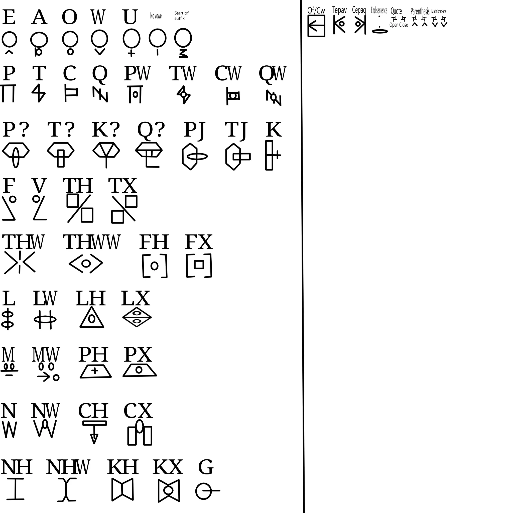
Word order in Quatrammotile is IVOS, where I is the indirect
object. Unlike Quatrammotile 1.0, I and O can be omitted.
However, the suffix -pren must be added to the verb if I is
deleted, or -prom if I and O are deleted.
Sentences can also contain extra parallel sentences at the end
to tack on intention and emotion. Intention is preceded by
"cheqeth", while emotion is preceded by "lxaeth". These must
always come after the main sentence. If "cheqeth" or "lxaeth"
start a sentence, it just states your intentions and emotions
with no imparted knowledge. REMEMBER: The main sentence
carries over only knowledge, and it's improper to derive
anything else from it, including why they might have said it,
possible reasons for their word choice, emotion in their tone
of voice, etc. It may however contain and depend on context as
long as any intentional or emotional context was stated during
the conversation.
The rule of nesting sentences within nouns to refer to the
subject of the sentence has now been removed, as I'm worried
about it potentially introducing written ambiguity.
Grammatical parentheses using tepav and cepaq still apply,
and this is the only way to do any recursion at all.
Base ten is a little too human. Since this language is spoken by four-dimensional people, I think base 16 (4^4) is a reasonable base.
- 0 - auten - 1 - mano - 2 - t?ae - 3 - trae - 4 - tetra - 5 - penta - 6 - hekcha - 7 - hepta - 8 - oqte - 9 - enea - A - meqa - B - c?aena - C - lhekha - D - tjemea - E - tjuthrra - F - txomra - 10 - teka - 11 - henteka - 12 - toteka - 13 - traechqaeteka - 14 - tetrachqaeteka - 15 - pentachqaeteka - 20 - aekoca - 21 - aekocamano - 22 - aekocat?ae - 23 - aekocatrae - 30 - traeqanta - 40 - tetraqanta - 100 - hekato - 101 - hekatomano - 102 - hekatot?ae - 200 - t?aeqosa - 300 - traeqosa - 400 - tetraqosa - 1000 - cwelea - 1001 - cweleamano - 2000 - t?aechcwelea - 3000 - traechcwelea - 4000 - tetrachcwelea - 10000 - melwea - 20000 - t?aechmelwea - 30000 - traechmelwea - 40000 - tetrachmelwea - 1,00000 - thwnmanopxica - 4,00006 - tetrachthwnmanophixahekcha - DEAD,4BEEF - tjemeachcwelea-tjuthrraqosa-meqaqonta-tjemeach-thwnmanopxica/tetachmelwea-c?aena-tjuthrraqosa-tjuthrraqanta-txomratjemeachcwelea[D000]tjuthrraqosa[E00]meqaqonta[A0]tjemeach[D]thwnmanopxica[x1,00000]tetachmelwea[40000]c?aena[B000]tjuthrraqosa[E00]tjuthrraqanta[E0]txomra[F] - 1,00000,00000 - thwnt?aepxica - 1,00000,00000,00000 - thwntraepxica thwn[n]pxica = 16^(5n)
One problem with Quatrammotile is that the words are just too dang
long! While I don't have a great solution to that, I do know that
defining variables is good for code golfing.
So, new grammatical construct! Any phrase that can be put inside
tepav/depaq brackets can now be defined as a word for the
remainder of the conversation.
The construct is merely tacked on to an existing use of tepav and
depaq, as:
ephoq?elh [new word] tepav [phrase] depaq[suffixes]
The new word overwrites any previous definitions of a word, which
can be a neat rhetorical technique (redefine the word for "war" as
"mindless struggle for control freaks" then use the latter exactly
how you would use the former).
The entire lexicon is ported over with the orthography and sound hotswaps applied. However, all affixes are moved to the suffix position, to avoid ambiguity in their order.
| Quatrammotile | Quatrammotile IPA | Uqultubhumtaebhulu | Uqultubhumtaebhulu IPA | Siavʊsovʊco | Siavʊsovʊco IPA | Quatrammotile 2.0 | Quatrammotile 2.0 IPA |
|---|---|---|---|---|---|---|---|
| q'lot'rov'matoev'lu | q͡lɒt͡rɒv͡motɒɛv͡lʊ | uqulaturabhumotaebhulu | ʊqʊlɒtʊ˞ɒβʊmotaiβʊlʊ | siavʊsovʊco | çɪaβʊçɤβʊcɤ | q?atramrotaelru | q'ɒtʷɒmʷotɒɛlʷʊ |
| ov'nquvetheq'lt'quq | ɒv͡nqʊvɛθɛq͡lt͡qʊq | anqubhethequltq-uqu | ɒɴʊβɛθɛqʊltθʊqʊ | nqʊvetheqʊtzʊco | ɴʊβeθeqʊtɕʊcɤ | anrquvetheq?t?uq | ɒnʷqʊvɛθɛq't'ʊq |
| thetxv'neafoef'rusu | θɛðv͡nɛofɒɛf͡rʊsʊ | thedhbhuneophaephurusu | θɛðβʊnɛoɸaiɸʊ˞ʊsʊ | thedhvʊsofacofiʊs | θeðβʊçɤɸacɤɸɪʊs | thetxnreofaethrusu | θɛðnʷɛofɒɛð̞ʊsʊ |
| oevaqtw | ɒɛvoqtu | aebhoqtw | aiβoqtu | covoq | cɤβɤq | aevoqtw | ɒɛvoqtu |
| oaut'qtxetthetx'rqwod | ɒoʊt͡qðɛtθɛð͡rquɒ⌺ | aouqgdhetq-edhurqwadu | ɒoʊqχðɛtθɛðʊ˞quɒdʷʊ | sʊdhetzedhiqwcod | çʊðetɕeðɪqɯcɤd | aout?txetthefxqwac | ɒoʊt'ðɛtθɛð͆quɒc |
| aotxev'ndoeq'l | oɒðɛv͡n⌺ɒɛq͡l | oadhenaequl | oɒðɛnaiqʊl | ocodhentacoq | ɤcɤðenacɤq | oatxenrcaeq? | oɒðɛnʷcɒɛq' |
| qov'nthuthentef'n | qɒv͡nθʊθɛntɛf͡n | uqabhunthuthentenq | ʊqɒβʊnθʊθɛntɛɴ | covʊthenttenq | cɤβʊθenteɴ | qanrthuthenten | qɒnʷθʊθɛntɛn |
| eqthef'lev'nithethiv | ɛqθɛf͡lɛv͡niθɛθiv | equthephulebhunithethibh | ɛqʊθɛɸʊlɛβʊniθɛθiβ | eqʊthefʊcovʊcothethiv | eqʊθeɸʊcɤβʊcɤθeθiβ | eqthelenrithethiv | ɛqθɛlɛnʷiθɛθiv |
| eqetof'nt'roev | ɛqɛtɒf͡nt͡rɒɛv | eqetan'raebh | ɛqɛtɒn'raiβ | eqecantacov | eqecanacɤβ | eqetantraev | ɛqɛtɒntʷɒɛv |
| woqet'ref'niq | uɒqɛt͡rɛf͡niq | waqeturephuniqu | uɒqɛtʊ˞ɛɸʊniqʊ | coqeciefʊcoq | cɤqecɪeɸʊcɤq | waqetreniq | uɒqɛtʷɛniq |
| vefof'ret'rev'n | vɛfɒf͡rɛt͡rɛv͡n | bhephaphureturenq | βɛɸɒɸʊ˞ɛtʊ˞ɛɴ | vefiecienq | βeɸɪecɪeɴ | vefathretrenr | vɛfɒð̞ɛtʷɛnʷ |
| qof'lf'rowf'nef | qɒf͡lf͡rɒuf͡nɛf | uqaphulphurawphuneph | ʊqɒɸʊlɸʊ˞ɒuɸʊnɛɸ | cofiacofʊcof | cɤɸɪacɤɸʊcɤɸ | qalthrawnef | qɒlð̞ɒunɛf |
| t'reafeoq | t͡rɛofɛɒq | tureopheaqu | tʊ˞ɛoɸɛɒqʊ | tiecofecoq | tɪecɤɸecɤq | treofeaq | tʷɛofɛɒq |
| outef'n | ɒʊtɛf͡n | autenq | ɒʊtɛɴ | senq | çeɴ | auten | ɒʊtɛn |
| t'loe | t͡lɒɛ | tulae | tʊlai | tʊs | tʊç | tjae | tʲɒɛ |
| th'roet | θ͡rɒɛt | thuraet | θʊ˞ait | thiacot | θɪacɤt | fhaet | θ͆ɒɛt |
| pef'nto | pɛf͡ntɒ | penuo | pɛnʌ | pentʌ | penʌ | penta | pɛntɒ |
| feqtho | fɛqθɒ | phequthuo | ɸɛqʊθʌ | feqʊthʌ | ɸeqʊθʌ | feqtha | fɛqθɒ |
| fepto | fɛptɒ | pheptuo | ɸɛptʌ | feptʌ | ɸeptʌ | fepta | fɛptɒ |
| oqte | ɒqtɛ | aqte | ɒqtɛ | qe | qe | aqte | ɒqtɛ |
| ef'neo | ɛf͡nɛɒ | ephuneuo | ɛɸʊnɛʌ | efʊcoʌ | eɸʊcɤʌ | enea | ɛnɛɒ |
| teqo | tɛqɒ | tequo | tɛqʌ | teqʌ | teqʌ | teqa | tɛqɒ |
| oeqatho | ɒɛqoθɒ | aeqothuo | aiqoθʌ | coqothʌ | cɤqɤθʌ | aeqotha | ɒɛqoθɒ |
| qof'nto | qɒf͡ntɒ | uqanuo | ʊqɒnʌ | contʌ | cɤnʌ | qanta | qɒntɒ |
| feqota | fɛqɒto | pheqato | ɸɛqɒto | feqaco | ɸeqacɤ | feqato | fɛqɒto |
| qatho | qoθɒ | uqothuo | ʊqoθʌ | cothʌ | cɤθʌ | qotha | qoθɒ |
| quf'luo | qʊf͡lʊɒ | uquphuluuo | ʊqʊɸʊlʊʌ | cofʊcoʌ | cɤɸʊcɤʌ | qulua | qʊlʊɒ |
| f'muf'rua | f͡mʊf͡rʊo | phumuphuruo | ɸʊmʊɸʊ˞ʊo | fʊcofiʊco | ɸʊcɤɸɪʊcɤ | muthruo | mʊð̞ʊo |
| tx'mu | ð͡mʊ | dhumu | ðʊmʊ | dhʊco | ðʊcɤ | pxu | βʊ |
| t'qwpet | t͡qupɛt | tq-wpet | tθupɛt | tzwpet | tɕɯpet | t?wpet | t'upɛt |
| t'roe | t͡rɒɛ | turae | tʊ˞ai | tiaco | tɪacɤ | trae | tʷɒɛ |
| tet'ro | tɛt͡rɒ | teturuo | tɛtʊ˞ʌ | teciʌ | tecɪʌ | tetra | tɛtʷɒ |
| pe | pɛ | pe | pɛ | pe | pe | pe | pɛ |
| pa | po | po | po | po | pɤ | po | po |
| petx'l | pɛð͡l | pelh | pɛɮ | pelh | peɮ | pelx | pɛɮ |
| potx'l | pɒð͡l | palh | pɒɮ | palh | paɮ | palx | pɒɮ |
| peq | pɛq | pequ | pɛqʊ | peq | peq | peq | pɛq |
| poq | pɒq | paqu | pɒqʊ | paq | paq | paq | pɒq |
| fe | fɛ | phe | ɸɛ | fe | ɸe | fe | fɛ |
| fa | fo | pho | ɸo | fo | ɸɤ | fo | fo |
| fetx'l | fɛð͡l | phelh | ɸɛɮ | felh | ɸeɮ | felx | fɛɮ |
| fotx'l | fɒð͡l | phalh | ɸɒɮ | falh | ɸaɮ | falx | fɒɮ |
| feq | fɛq | phequ | ɸɛqʊ | feq | ɸeq | feq | fɛq |
| foq | fɒq | phaqu | ɸɒqʊ | faq | ɸaq | faq | fɒq |
| ve | vɛ | bhe | βɛ | ve | βe | ve | vɛ |
| va | vo | bho | βo | vo | βɤ | vo | vo |
| vetx'l | vɛð͡l | bhelh | βɛɮ | velh | βeɮ | velx | vɛɮ |
| votx'l | vɒð͡l | bhalh | βɒɮ | valh | βaɮ | valx | vɒɮ |
| veq | vɛq | bhequ | βɛqʊ | veq | βeq | veq | vɛq |
| voq | vɒq | bhaqu | βɒqʊ | vaq | βaq | vaq | vɒq |
| tha | θo | tho | θo | tho | θɤ | tho | θo |
| thetx'l | θɛð͡l | thelh | θɛɮ | thelh | θeɮ | thelx | θɛɮ |
| thotx'l | θɒð͡l | thalh | θɒɮ | thalh | θaɮ | thalx | θɒɮ |
| theq | θɛq | thequ | θɛqʊ | theq | θeq | theq | θɛq |
| thoq | θɒq | thaqu | θɒqʊ | thaq | θaq | thaq | θɒq |
| qe | qɛ | uqe | ʊqɛ | co | cɤ | qe | qɛ |
| qa | qo | uqo | ʊqo | co | cɤ | qo | qo |
| qetx'l | qɛð͡l | uqelh | ʊqɛɮ | colh | cɤɮ | qelx | qɛɮ |
| qotx'l | qɒð͡l | uqalh | ʊqɒɮ | colh | cɤɮ | qalx | qɒɮ |
| qeq | qɛq | uqequ | ʊqɛqʊ | coq | cɤq | qeq | qɛq |
| qoq | qɒq | uqaqu | ʊqɒqʊ | coq | cɤq | qaq | qɒq |
| txe | ðɛ | dhe | ðɛ | dhe | ðe | txe | ðɛ |
| txa | ðo | dho | ðo | dho | ðɤ | txo | ðo |
| txetx'l | ðɛð͡l | dhelh | ðɛɮ | dhelh | ðeɮ | txelx | ðɛɮ |
| txotx'l | ðɒð͡l | dhalh | ðɒɮ | dhalh | ðaɮ | txalx | ðɒɮ |
| txeq | ðɛq | dhequ | ðɛqʊ | dheq | ðeq | txeq | ðɛq |
| txoq | ðɒq | dhaqu | ðɒqʊ | dhaq | ðaq | txaq | ðɒq |
| ge | ⇄ɛ | ɕe | ɕɛ | se | çe | ge | hɛ |
| ga | ⇄o | ɕo | ɕo | so | çɤ | go | ho |
| getx'l | ⇄ɛð͡l | ɕelh | ɕɛɮ | selh | çeɮ | gelx | hɛɮ |
| gotx'l | ⇄ɒð͡l | ɕalh | ɕɒɮ | salh | çaɮ | galx | hɒɮ |
| geq | ⇄ɛq | ɕequ | ɕɛqʊ | seq | çeq | geq | hɛq |
| goq | ⇄ɒq | ɕaqu | ɕɒqʊ | saq | çaq | gaq | hɒq |
| tepov | tɛpɒv | tepabh | tɛpɒβ | tepav | tepaβ | tepav | tɛpɒv |
| depoq | ⌺ɛpɒq | cgepaqu | ɟʷɛpɒqʊ | jepaq | ɟepaq | cepaq | cɛpɒq |
| wtxo | uðɒ | wdhuo | uðʌ | dhʌ | ðʌ | wtxa | uðɒ |
| wtxeod | uðɛɒ⌺ | wdheadu | uðɛɒdʷʊ | dhecod | ðecɤd | wtxeac | uðɛɒc |
| wtxetuv | uðɛtʊv | wdhetubh | uðɛtʊβ | dhecʊv | ðecʊβ | wtxetuv | uðɛtʊv |
| dw | ⌺u | cgw | ɟʷu | j | ɟ | cw | cu |
| v'lad'q | v͡lo⌺͡q | bhulocw'qu | βʊlocʷ'qʊ | vʊcoq | βʊcɤq | lroc? | lʷoc' |
| uvetxef'h | ʊvɛðɛf͡h | ubhedhenqqu | ʊβɛðɛɴqʊ | vedhef'h | βeðeɸ'h | uvetxenh | ʊvɛðɛŋ |
| dave | ⌺ovɛ | cgobhe | ɟʷoβɛ | jove | ɟɤβe | cove | covɛ |
| thwv | θuv | thwbh | θuβ | thwv | θɯβ | thwv | θuv |
| gothw | ⇄ɒθu | ɕathw | ɕɒθu | sath | çaθ | gathw | hɒθu |
| qugqod | qʊ⇄qɒ⌺ | uqughqadu | ʊqʊⵒqɒdʷʊ | coqhqad | cɤχqad | qugqac | qʊhqɒc |
| godetx | ⇄ɒ⌺ɛð | ɕacgedh | ɕɒɟʷɛð | sajedh | çaɟeð | gacetx | hɒcɛð |
| qwtx'nedotxw | quð͡nɛ⌺ɒðu | uqwdhunecgadhw | ʊquðʊnɛɟʷɒðu | codhʊcojadh | cɤðʊcɤɟað | qwcxecatxw | quʝɛcɒðu |
| theadaq'ropav'luth | θɛo⌺oq͡rɒpov͡lʊθ | theocgoqurapobhuluth | θɛoɟʷoqʊ˞ɒpoβʊlʊθ | thecojoqiapovʊcoth | θecɤɟɤqɪapɤβʊcɤθ | theocoqrapolruth | θɛocoqʷɒpolʷʊθ |
| qof'nthatef'n | qɒf͡nθotɛf͡n | uqaphunthotenq | ʊqɒɸʊnθotɛɴ | cofʊthocenq | cɤɸʊθɤceɴ | qanthoten | qɒnθotɛn |
| thefoqa | θɛfɒqo | thephaqo | θɛɸɒqo | thefaqo | θeɸaqɤ | thefaqo | θɛfɒqo |
| edetxag | ɛ⌺ɛðo⇄ | ecgedhoɕ | ɛɟʷɛðoɕ | ejedhos | eɟeðɤç | ecetxog | ɛcɛðoh |
| gaoep'qed | ⇄oɒɛp͡qɛ⌺ | ɕoaepuqedu | ɕoaipʊqɛdʷʊ | sosipʊcod | çɤçipʊcɤd | goaep?ec | hoɒɛp'ɛc |
| th'redwv'm | θ͡rɛ⌺uv͡m | thurecgwmq | θʊ˞ɛɟʷuɱ | thiejwme | θɪeɟɯme | fhecwmr | θ͆ɛcumʷ |
| tx'lud | ð͡lʊ⌺ | lhudu | ɮʊdʷʊ | lhʊd | ɮʊd | lxuc | ɮʊc |
| teqatetx'l | tɛqotɛð͡l | teqotelh | tɛqotɛɮ | teqocelh | teqɤceɮ | teqotelx | tɛqotɛɮ |
| vopavtwd | vɒpovtu⌺ | bhapobhtwdu | βɒpoβtudʷʊ | vapovtwd | βapɤβtɯd | vapovtwc | vɒpovtuc |
| vatwq | votuq | bhotwqu | βotuqʊ | vocwq | βɤcɯq | votwq | votuq |
| petaqwetx | pɛtoquɛð | petoqwedh | pɛtoquɛð | pecoqwcodh | pecɤqɯcɤð | petoqwetx | pɛtoquɛð |
| f'la | f͡lo | phulo | ɸʊlo | fʊco | ɸʊcɤ | lo | lo |
| pea | pɛo | peo | pɛo | peco | pecɤ | peo | pɛo |
| pead | pɛo⌺ | peodu | pɛodʷʊ | pecod | pecɤd | peoc | pɛoc |
| deth | ⌺ɛθ | cgeth | ɟʷɛθ | jeth | ɟeθ | ceth | cɛθ |
| detx | ⌺ɛð | cgedh | ɟʷɛð | jedh | ɟeð | cetx | cɛð |
| tx'ret'q | ð͡rɛt͡q | dhureqh | ðʊ˞ɛχ | dhieq | ðɪeq | fxet? | ð͆ɛt' |
| tx'lap | ð͡lop | lhop | ɮop | lhop | ɮɤp | lxop | ɮop |
| quth'let | qʊθ͡lɛt | uquthulet | ʊqʊθʊlɛt | cothʊcot | cɤθʊcɤt | qulhet | qʊɬɛt |
| tep'roq | tɛp͡rɒq | tepuraqu | tɛpʊ˞ɒqʊ | tepiaq | tepɪaq | tepraq | tɛpʷɒq |
| tep'roqoet | tɛp͡rɒqɒɛt | tepuraqaet | tɛpʊ˞ɒqait | tepiaqacot | tepɪaqacɤt | tepraqaet | tɛpʷɒqɒɛt |
| p'rot | p͡rɒt | purat | pʊ˞ɒt | piat | pɪat | prat | pʷɒt |
| eqov'n | ɛqɒv͡n | eqanq | ɛqɒɴ | eqanq | eqaɴ | eqanr | ɛqɒnʷ |
| qeveqotwvoet | qɛvɛqɒtuvɒɛt | uqebheqatwbhaet | ʊqɛβɛqɒtuβait | coveqacwvacot | cɤβeqacɯβacɤt | qeveqatwvaet | qɛvɛqɒtuvɒɛt |
| dotx'lev'n | ⌺ɒð͡lɛv͡n | cgalhenq | ɟʷɒɮɛɴ | jalhenq | ɟaɮeɴ | calxenr | cɒɮɛnʷ |
| tweq'rev'l | tuɛq͡rɛv͡l | twequrebhul | tuɛqʊ˞ɛβʊl | twcoqiev | tɯcɤqɪeβ | tweqrelr | tuɛqʷɛlʷ |
| qoq'ldevup | qɒq͡l⌺ɛvʊp | uqaqulcgebhup | ʊqɒqʊlɟʷɛβʊp | coqʊjevʊp | cɤqʊɟeβʊp | qaq?cevup | qɒq'cɛvʊp |
| p'laqev'nt'rodewegog | p͡loqɛv͡nt͡rɒ⌺ɛuɛ⇄ɒ⇄ | puloqen'racgeweghaɕ | pʊloqɛn'rɒɟʷɛuɛⵒɒɕ | pʊcoqentajeseqhas | pʊcɤqenaɟeçeχaç | pjoqenrtracewegag | pʲoqɛnʷtʷɒcɛuɛhɒh |
| thegpaq'lqaq'rov'negog | θɛ⇄poq͡lqoq͡rɒv͡nɛ⇄ɒ⇄ | theghpoqulqoqurabhuneghaɕ | θɛⵒpoqʊlqoqʊ˞ɒβʊnɛⵒɒɕ | theqhpoqʊcoqiavʊcoqhas | θeχpɤqʊcɤqɪaβʊcɤχaç | thegpoq?qoqranregag | θɛhpoq'qoqʷɒnʷɛhɒh |
| tot'ruthegog | tɒt͡rʊθɛ⇄ɒ⇄ | taturutheghaɕ | tɒtʊ˞ʊθɛⵒɒɕ | taciʊtheqhas | tacɪʊθeχaç | tatruthegag | tɒtʷʊθɛhɒh |
| ed'ref'megog | ɛ⌺͡rɛf͡mɛ⇄ɒ⇄ | ecw'rephumeghaɕ | ɛcʷ'rɛɸʊmɛⵒɒɕ | erefʊcoqhas | ereɸʊcɤχaç | ecremegag | ɛcʷɛmɛhɒh |
| ed'refetetxav | ɛ⌺͡rɛfɛtɛðov | ecw'rephetedhobh | ɛcʷ'rɛɸɛtɛðoβ | erefecedhov | ereɸeceðɤβ | ecrefetetxov | ɛcʷɛfɛtɛðov |
| q'raq'leduwt | q͡roq͡lɛ⌺ʊut | uquroqulecguwt | ʊqʊ˞oqʊlɛɟʷʊut | co˞oqʊcojʊcot | cɤ˞ɤqʊcɤɟʊcɤt | qroq?ecuwt | qʷoq'ɛcʊut |
| qov'hdet'lwg | qɒv͡h⌺ɛt͡lu⇄ | uqanqqetulwɕ | ʊqɒɴqɛtʊluɕ | cov'hjesos | cɤβ'hɟeçɤç | qanhrcetjwg | qɒŋʷcɛtʲuh |
| dedafw | ⌺ɛ⌺ofu | cgecgophw | ɟʷɛɟʷoɸu | jejof | ɟeɟɤɸ | cecofw | cɛcofu |
| tagatepuq | to⇄otɛpʊq | toghotepuqu | toⵒotɛpʊqʊ | toqhocepʊco | tɤχɤcepʊcɤ | togotepuq | tohotɛpʊq |
| qoqedeqaq'l | qɒqɛ⌺ɛqoq͡l | uqaqecgeqoqul | ʊqɒqɛɟʷɛqoqʊl | coqejeqoq | cɤqeɟeqɤq | qaqeceqoq? | qɒqɛcɛqoq' |
| wev'ntew | uɛv͡ntɛu | wenew | uɛnɛu | conteco | cɤnecɤ | wenrtew | uɛnʷtɛu |
| p'laqtef'reafedutx'l | p͡loqtɛf͡rɛofɛ⌺ʊð͡l | puloqtephureophecgulh | pʊloqtɛɸʊ˞ɛoɸɛɟʷʊɮ | pʊcoqefiecofejʊlh | pʊcɤqeɸɪecɤɸeɟʊɮ | pjoqtethreofeculx | pʲoqtɛð̞ɛofɛcʊɮ |
| q'lef | q͡lɛf | uquleph | ʊqʊlɛɸ | sef | çeɸ | q?ef | q'ɛf |
| q'lefetqav'lat | q͡lɛfɛtqov͡lot | uqulephet-qobhulot | ʊqʊlɛɸɛtqoβʊlot | sefetqovʊcot | çeɸetqɤβʊcɤt | q?efetqolrot | q'ɛfɛtqolʷot |
| tev'repqoeatwg | tɛv͡rɛpqɒɛotu⇄ | tebhurepqaeotwɕ | tɛβʊ˞ɛpqaiotuɕ | teviepqasws | teβɪepqaçɯç | tethrrepqaeotwg | tɛð̞ʷɛpqɒɛotuh |
| pevuetx | pɛvʊɛð | pebhuedh | pɛβʊɛð | pevʊcodh | peβʊcɤð | pevuetx | pɛvʊɛð |
| pev'haedop | pɛv͡hoɛ⌺ɒp | pebhunqoecgap | pɛβʊɴoɛɟʷɒp | pev'hocojap | peβ'hɤcɤɟap | penhroecap | pɛŋʷoɛcɒp |
| deatep'l | ⌺ɛotɛp͡l | cgeotepul | ɟʷɛotɛpʊl | jesep | ɟeçep | ceotepj | cɛotɛpʲ |
| ugwodoteg | ʊ⇄uɒ⌺ɒtɛ⇄ | ughwacgateɕ | ʊⵒuɒɟʷɒtɛɕ | qhwcojaces | χɯcɤɟaceç | ugwacateg | ʊhuɒcɒtɛh |
| ugwotov | ʊ⇄uɒtɒv | ughwatabh | ʊⵒuɒtɒβ | qhwsav | χɯçaβ | ugwatav | ʊhuɒtɒv |
| t'rep | t͡rɛp | turep | tʊ˞ɛp | tiep | tɪep | trep | tʷɛp |
| qep'r | qɛp͡r | uqepur | ʊqɛpʊ˞ | cop | cɤp | qepr | qɛpʷ |
| d'repetoq | ⌺͡rɛpɛtɒq | cw'repetaqu | cʷ'rɛpɛtɒqʊ | repecaq | repecaq | crepetaq | cʷɛpɛtɒq |
| q'lefpaqef'n | q͡lɛfpoqɛf͡n | uqulephpoqunq | ʊqʊlɛɸpoqʊɴ | sepoq | çepɤq | q?efpoqen | q'ɛfpoqɛn |
| q'lefdaqef'n | q͡lɛf⌺oqɛf͡n | uqulephcgoqunq | ʊqʊlɛɸɟʷoqʊɴ | sefjoq | çeɸɟɤq | q?efcoqen | q'ɛfcoqɛn |
| q'leftaqef'n | q͡lɛftoqɛf͡n | uqulephtoqunq | ʊqʊlɛɸtoqʊɴ | setoq | çetɤq | q?eftoqen | q'ɛftoqɛn |
| q'lefqaqef'n | q͡lɛfqoqɛf͡n | uqulephqoqunq | ʊqʊlɛɸqoqʊɴ | seqoq | çeqɤq | q?efqoqen | q'ɛfqoqɛn |
| q'lefgaqef'n | q͡lɛf⇄oqɛf͡n | uqulephghoqunq | ʊqʊlɛɸⵒoqʊɴ | sefqhoq | çeɸχɤq | q?efgoqen | q'ɛfhoqɛn |
| q'leffaqef'n | q͡lɛffoqɛf͡n | uqulephphoqunq | ʊqʊlɛɸɸoqʊɴ | sefoq | çeɸɤq | q?effoqen | q'ɛffoqɛn |
| q'lefvaqef'n | q͡lɛfvoqɛf͡n | uqulephbhoqunq | ʊqʊlɛɸβoqʊɴ | sevoq | çeβɤq | q?efvoqen | q'ɛfvoqɛn |
| q'lefthaqef'n | q͡lɛfθoqɛf͡n | uqulephthoqunq | ʊqʊlɛɸθoqʊɴ | sethoq | çeθɤq | q?efthoqen | q'ɛfθoqɛn |
| q'leftxaqef'n | q͡lɛfðoqɛf͡n | uqulephdhoqunq | ʊqʊlɛɸðoqʊɴ | sedhoq | çeðɤq | q?eftxoqen | q'ɛfðoqɛn |
| q'lefetqav'lat | q͡lɛfɛtqov͡lot | uqulephet-qobhulot | ʊqʊlɛɸɛtqoβʊlot | sefetqovʊcot | çeɸetqɤβʊcɤt | q?efetqolrot | q'ɛfɛtqolʷot |
| q'lefetf'lav'lat | q͡lɛfɛtf͡lov͡lot | uqulephetphulobhulot | ʊqʊlɛɸɛtɸʊloβʊlot | sefetfʊcovʊcot | çeɸetɸʊcɤβʊcɤt | q?efetlolrot | q'ɛfɛtlolʷot |
| q'lefetf'rav'lat | q͡lɛfɛtf͡rov͡lot | uqulephetphurobhulot | ʊqʊlɛɸɛtɸʊ˞oβʊlot | sefetfiovʊcot | çeɸetɸɪɤβʊcɤt | q?efetthrolrot | q'ɛfɛtð̞olʷot |
| q'lefetf'mav'lat | q͡lɛfɛtf͡mov͡lot | uqulephetphumobhulot | ʊqʊlɛɸɛtɸʊmoβʊlot | sefetfʊcovʊcot | çeɸetɸʊcɤβʊcɤt | q?efetmolrot | q'ɛfɛtmolʷot |
| q'lefetf'nav'lat | q͡lɛfɛtf͡nov͡lot | uqulephetphunobhulot | ʊqʊlɛɸɛtɸʊnoβʊlot | sefetfʊcovʊcot | çeɸetɸʊcɤβʊcɤt | q?efetnolrot | q'ɛfɛtnolʷot |
| q'lefetf'hav'lat | q͡lɛfɛtf͡hov͡lot | uqulephetphunqobhulot | ʊqʊlɛɸɛtɸʊɴoβʊlot | sefetf'hovʊcot | çeɸetɸ'hɤβʊcɤt | q?efetnholrot | q'ɛfɛtŋolʷot |
| -peq | ~-pɛq | ~-pequ | ~-pɛqʊ | ~-peq | ~-peq | -peq | -pɛq |
| -p'rep'l | ~-p͡rɛp͡l | ~-purepul | ~-pʊ˞ɛpʊl | ~-piep | ~-pɪep | -prepj | -pʷɛpʲ |
| -pop'r | ~-pɒp͡r | ~-papur | ~-pɒpʊ˞ | ~-pap | ~-pap | -papr | -pɒpʷ |
| -fat'r | ~-fot͡r | ~-photur | ~-ɸotʊ˞ | ~-foc | ~-ɸɤc | -fotr | -fotʷ |
| -fwqef'l | ~-fuqɛf͡l | ~-phwqephul | ~-ɸuqɛɸʊl | ~-fwqef | ~-ɸɯqeɸ | -fwqel | -fuqɛl |
| -fwq'ret | ~-fuq͡rɛt | ~-phwquret | ~-ɸuqʊ˞ɛt | ~-fwqiet | ~-ɸɯqɪet | -fwqret | -fuqʷɛt |
| -vat'r | ~-vot͡r | ~-bhotur | ~-βotʊ˞ | ~-voc | ~-βɤc | -votr | -votʷ |
| -vwqef'l | ~-vuqɛf͡l | ~-bhwqephul | ~-βuqɛɸʊl | ~-vwqef | ~-βɯqeɸ | -vwqel | -vuqɛl |
| -vwq'ret | ~-vuq͡rɛt | ~-bhwquret | ~-βuqʊ˞ɛt | ~-vwqiet | ~-βɯqɪet | -vwqret | -vuqʷɛt |
| -thoq | ~-θɒq | ~-thaqu | ~-θɒqʊ | ~-thaq | ~-θaq | -thaq | -θɒq |
| -thut'l | ~-θʊt͡l | ~-thutul | ~-θʊtʊl | ~-thʊc | ~-θʊc | -thutj | -θʊtʲ |
| -thet | ~-θɛt | ~-thet | ~-θɛt | ~-thet | ~-θet | -thet | -θɛt |
| -qov | ~-qɒv | ~-qabh | ~-qɒβ | ~-qav | ~-qaβ | -qav | -qɒv |
| -qe | ~-qɛ | ~-qe | ~-qɛ | ~-qe | ~-qe | -qe | -qɛ |
| -txeqwvo | ~-ðɛquvɒ | ~-dheqwbhuo | ~-ðɛquβʌ | ~-dheqwvʌ | ~-ðeqɯβʌ | -txeqwva | -ðɛquvɒ |
| -txe | ~-ðɛ | ~-dhe | ~-ðɛ | ~-dhe | ~-ðe | -txe | -ðɛ |
| -txowv'h | ~-ðɒuv͡h | ~-dhawnqqu | ~-ðɒuɴqʊ | ~-dhacov'h | ~-ðacɤβ'h | -txawnhr | -ðɒuŋʷ |
| -gopa | ~-⇄ɒpo | ~-ɕapo | ~-ɕɒpo | ~-sapo | ~-çapɤ | -gapo | -hɒpo |
| -goteo | ~-⇄ɒtɛɒ | ~-ɕateuo | ~-ɕɒtɛʌ | ~-seʌ | ~-çeʌ | -gatea | -hɒtɛɒ |
| -guwt | ~-⇄ʊut | ~-ɕuwt | ~-ɕʊut | ~-sot | ~-çɤt | -guwt | -hʊut |
| -te | ~-tɛ | ~-te | ~-tɛ | ~-te | ~-te | -te | -tɛ |
| -wp | ~-up | ~-wp | ~-up | ~-wp | ~-ɯp | -wp | -up |
| -wf | ~-uf | ~-wph | ~-uɸ | ~-wf | ~-ɯɸ | -wf | -uf |
| -wv | ~-uv | ~-wbh | ~-uβ | ~-wv | ~-ɯβ | -wv | -uv |
| -at | ~-ot | ~-ot | ~-ot | ~-ot | ~-ɤt | -ot | -ot |
| -aq | ~-oq | ~-oqu | ~-oqʊ | ~-oq | ~-ɤq | -oq | -oq |
| -aut | ~-oʊt | ~-out | ~-oʊt | ~-ocot | ~-ɤcɤt | -out | -oʊt |
| -aug | ~-oʊ⇄ | ~-ouɕ | ~-oʊɕ | ~-oc | ~-ɤc | -oug | -oʊh |
| -eda | ~-ɛ⌺o | ~-ecgo | ~-ɛɟʷo | ~-ejo | ~-eɟɤ | -eco | -ɛco |
| -tode | ~-tɒ⌺ɛ | ~-tacge | ~-tɒɟʷɛ | ~-taje | ~-taɟe | -tace | -tɒcɛ |
| -gae | ~-⇄oɛ | ~-ɕoe | ~-ɕoɛ | ~-so | ~-çɤ | -goe | -hoɛ |
| -oq | ~-ɒq | ~-aqu | ~-ɒqʊ | ~-aq | ~-aq | -aq | -ɒq |
| -ga | ~-⇄o | ~-ɕo | ~-ɕo | ~-so | ~-çɤ | -go | -ho |
| -go | ~-⇄ɒ | ~-ɕuo | ~-ɕʌ | ~-sʌ | ~-çʌ | -ga | -hɒ |
| -gu | ~-⇄ʊ | ~-ɕu | ~-ɕʊ | ~-s | ~-ç | -gu | -hʊ |
| -thwqep | ~-θuqɛp | ~-thwqep | ~-θuqɛp | ~-thwqep | ~-θɯqep | -thwqep | -θuqɛp |
| -thwoqep | ~-θuɒqɛp | ~-thwaqep | ~-θuɒqɛp | ~-thwcoqep | ~-θɯcɤqep | -thwaqep | -θuɒqɛp |
| -veta | ~-vɛto | ~-bheto | ~-βɛto | ~-veco | ~-βecɤ | -veto | -vɛto |
| -edaet | ~-ɛ⌺oɛt | ~-ecgoet | ~-ɛɟʷoɛt | ~-ejocot | ~-eɟɤcɤt | -ecoet | -ɛcoɛt |
| -ev'h | ~-ɛv͡h | ~-enqqu | ~-ɛɴqʊ | ~-ev'h | ~-eβ'h | -enhr | -ɛŋʷ |
| -odeg | ~-ɒ⌺ɛ⇄ | ~-acgeɕ | ~-ɒɟʷɛɕ | ~-ajes | ~-aɟeç | -aceg | -ɒcɛh |
| -odut | ~-ɒ⌺ʊt | ~-acgut | ~-ɒɟʷʊt | ~-ajʊt | ~-aɟʊt | -acut | -ɒcʊt |
| -oqap | ~-ɒqop | ~-aqop | ~-ɒqop | ~-aqop | ~-aqɤp | -aqop | -ɒqop |
| -egog | ~-ɛ⇄ɒ⇄ | ~-eghaɕ | ~-ɛⵒɒɕ | ~-eqhas | ~-eχaç | -egag | -ɛhɒh |
| eda- | ɛ⌺o- | ecgo- | ɛɟʷo- | ejo- | eɟɤ- | eco- | ɛco- |
| tode- | tɒ⌺ɛ- | tacge- | tɒɟʷɛ- | taje- | taɟe- | tace- | tɒcɛ- |
| gae- | ⇄oɛ- | ɕoe- | ɕoɛ- | so- | çɤ- | goe- | hoɛ- |
| qo- | qɒ- | uqa- | ʊqɒ- | co- | cɤ- | qa- | qɒ- |
| txeu- | ðɛʊ- | dheu- | ðɛʊ- | dheco- | ðecɤ- | txeu- | ðɛʊ- |
| v'hetxaf'ro- | v͡hɛðof͡rɒ- | bhunqedhophura- | βʊɴɛðoɸʊ˞ɒ- | v'hedhofia- | β'heðɤɸɪa- | nhretxothra- | ŋʷɛðoð̞ɒ- |
| da- | ⌺o- | cgo- | ɟʷo- | jo- | ɟɤ- | co- | co- |
| daqa- | ⌺oqo- | cgoqo- | ɟʷoqo- | joqo- | ɟɤqɤ- | coqo- | coqo- |
| thedo- | θɛ⌺ɒ- | thecga- | θɛɟʷɒ- | theja- | θeɟa- | theca- | θɛcɒ- |
| p'rataef'ndauf'rapeon | p͡rotoɛf͡n⌺oʊf͡ropɛɒn | purotoenouphuropean | pʊ˞otoɛnoʊɸʊ˞opɛɒn | piosontocofiopecont | pɪɤçɤnɤcɤɸɪɤpecɤn | protoencouthropean | pʷotoɛncoʊð̞opɛɒn |
| qegeqovwt | qɛ⇄ɛqɒvut | uqegheqabhwt | ʊqɛ⇄ɛqɒβut | coqheqavwt | cɤχeqaβɯt | qegeqavwt | qɛhɛqɒvut |
| dwteq'rodequ | ⌺utɛq͡rɒ⌺ɛqʊ | cgwtequracgequ | ɟʷutɛqʊ˞ɒɟʷɛqʊ | jwceqiajeq | ɟɯceqɪaɟeq | cwteqracequ | cutɛqʷɒcɛqʊ |
| foeqof'mf'motof'negog | fɒɛqɒf͡mf͡mɒtɒf͡nɛ⇄ɒ⇄ | phaeqamq'mataphuneghagh | ɸaiqɒɱ'mɒtɒɸʊnɛ⇄ɒ⇄ | facoqame'macafʊcoqhas | ɸacɤqame'macaɸʊcɤχaç | faeqammatanegag | fɒɛqɒmmɒtɒnɛhɒh |
| dev'haq'ledwquv'hegog | ⌺ɛv͡hoq͡lɛ⌺uqʊv͡hɛ⇄ɒ⇄ | cgebh'hoqulecgwqubh'heghagh | ɟʷɛβ'hoqʊlɛɟʷuqʊβ'hɛ⇄ɒ⇄ | jev'hoqʊcojwqʊv'heqhas | ɟeβ'hɤqʊcɤɟɯqʊβ'heχaç | cenhroq?ecwqunhregag | cɛŋʷoq'ɛcuqʊŋʷɛhɒh |
| txwth | ðuθ | dhwth | ðuθ | dhwth | ðɯθ | txwth | ðuθ |
| edweth | ɛ⌺uɛθ | ecgweth | ɛɟʷuɛθ | ejwcoth | eɟɯcɤθ | ecweth | ɛcuɛθ |
| pathaedwaf'n | poθoɛ⌺uof͡n | pothoecgwonq | poθoɛɟʷuoɴ | pothocojwconq | pɤθɤcɤɟɯcɤɴ | pothoecwon | poθoɛcuon |
| uf'rua | ʊf͡rʊo | uphuruo | ʊɸʊ˞ʊo | fiʊco | ɸɪʊcɤ | uthruo | ʊð̞ʊo |
| dwef'metef'r | ⌺uɛf͡mɛtɛf͡r | cgwephumetephur | ɟʷuɛɸʊmɛtɛɸʊ˞ | jwcofʊsef | ɟɯcɤɸʊçeɸ | cwemetethr | cuɛmɛtɛð̞ |
| ofuf'radwoete | ɒfʊf͡ro⌺uɒɛtɛ | aphuphurocgwaete | ɒɸʊɸʊ˞oɟʷuaitɛ | fiojwse | ɸɪɤɟɯçe | afuthrocwaete | ɒfʊð̞ocuɒɛtɛ |
| euf'reth | ɛʊf͡rɛθ | euphureth | ɛʊɸʊ˞ɛθ | ecofieth | ecɤɸɪeθ | euthreth | ɛʊð̞ɛθ |
| qwf'ron | quf͡rɒn | uqwphuran | ʊquɸʊ˞ɒn | cofiant | cɤɸɪan | qwthran | quð̞ɒn |
| qof'mpegog | qɒf͡mpɛ⇄ɒ⇄ | uqamqeghagh | ʊqɒɱɛ⇄ɒ⇄ | comeeqhas | cɤmeeχaç | qampegag | qɒmpɛhɒh |
| eqotanqureth | ɛqɒtonqʊrɛθ | eqaton-qureth | ɛqɒtonqʊrɛθ | eqacontqʊcoth | eqacɤnqʊcɤθ | eqatonqureth | ɛqɒtonqʊrɛθ |
| qwf'ranath | quf͡ronoθ | uqwphuronoth | ʊquɸʊ˞onoθ | cofiontoth | cɤɸɪɤnɤθ | qwthronoth | quð̞onoθ |
| efaethtath | ɛfoɛθtoθ | ephoethtoth | ɛɸoɛθtoθ | efocothtoth | eɸɤcɤθtɤθ | efoethtoth | ɛfoɛθtoθ |
| qodwv'madop'r | qɒ⌺uv͡mo⌺ɒp͡r | uqacgwbhumocgapur | ʊqɒɟʷuβʊmoɟʷɒpʊ˞ | cojwvʊcojap | cɤɟɯβʊcɤɟap | qacwmrocapr | qɒcumʷocɒpʷ |
| vefeqotw | vɛfɛqɒtu | bhepheqatw | βɛɸɛqɒtu | vefeqac | βeɸeqac | vefeqatw | vɛfɛqɒtu |
| poteqoq'lfoet | pɒtɛqɒq͡lfɒɛt | pateqaqulphaet | pɒtɛqɒqʊlɸait | paceqaqʊfacot | paceqaqʊɸacɤt | pateqaq?faet | pɒtɛqɒq'fɒɛt |
| teq'ra | tɛq͡ro | tequro | tɛqʊ˞o | teqio | teqɪɤ | teqro | tɛqʷo |
| dwdef'rov'h | ⌺u⌺ɛf͡rɒv͡h | cgwcgephurabh'h | ɟʷuɟʷɛɸʊ˞ɒβ'h | jwjefiav'h | ɟɯɟeɸɪaβ'h | cwcethranhr | cucɛð̞ɒŋʷ |
| qedep'lp'rev'm | qɛ⌺ɛp͡lp͡rɛv͡m | uqecgepulpuremq | ʊqɛɟʷɛpʊlpʊ˞ɛɱ | cojepʊpieme | cɤɟepʊpɪeme | qecepjpremr | qɛcɛpʲpʷɛmʷ |
| gapert'qov | ⇄opɛrt͡qɒv | ghopertq-abh | ⇄opɛrtθɒβ | sopertzav | çɤpertɕaβ | gopert?av | hopɛrt'ɒv |
| p'qatxev'nthet'r | p͡qoðɛv͡nθɛt͡r | puqodhebhunthetur | pʊqoðɛβʊnθɛtʊ˞ | pʊcodhevʊthec | pʊcɤðeβʊθec | p?otxenrthetr | p'oðɛnʷθɛtʷ |
| t'lev'het'q | t͡lɛv͡hɛt͡q | tulebh'heqh | tʊlɛβ'hɛχ | tʊcov'heq | tʊcɤβ'heq | tjenhret? | tʲɛŋʷɛt' |
| q'leqtoewf | q͡lɛqtɒɛuf | uquleqtaewph | ʊqʊlɛqtaiuɸ | seqaswf | çeqaçɯɸ | q?eqtaewf | q'ɛqtɒɛuf |
| qop'leptetx | qɒp͡lɛptɛð | uqapuleptedh | ʊqɒpʊlɛptɛð | copʊcoptedh | cɤpʊcɤpteð | qapjeptetx | qɒpʲɛptɛð |
| vethep'r | vɛθɛp͡r | bhethepur | βɛθɛpʊ˞ | vethep | βeθep | vethepr | vɛθɛpʷ |
Sessive is the primary language spoken by residents of E6.
It operates on the philosophy that 1. Intentions should always
be clear, and 2. As much should be left to context as possible.
It is also a Toroidal language very distant from Quatrammotile,
which is evident in its number system.
The grammar of a sentence consists of:
- A statement of intention.
- Zero or more adjectives, which may modify each other in reverse
polish notation.
- An optional noun.
- Zero or more adverbs, which may modify each other in reverse
polish notation.
- A verb.
Any more complex information is encoded by multiple sentences.
Sessive's phonology, in IPA, is consonanta m; n; p; t; k;
ɹʷ; l; x; j; v; with vowels i; u; e; o; a. The Latin
orthography uses mostly the same letters as IPA except that
ɹʷ is written r. Its phonotactics are (C1)V(j)(C2),
where C2 is any consonant except j and C1 is any consonant, tr or
kr.
The currently documented lexicon is:
| Word | Part of speech | Definition |
|---|---|---|
| exfeju | Intention | Query of method ("how") |
| vexeja | Intention | Query of thing ("what") |
| ajanaj | Intention | Query of place ("where") |
| etenemul | Intention | Statement of broader intention |
| mejan | Intention | Statement of fact |
| ejentaxelat | Intention | Expression of gratitude ("thank you") |
| kejanul | Noun | Speaker ("me") |
| texari | Noun | The most recent noun mentioned besides texari |
| vejanijev | Noun | level |
| kavejev | Noun | room |
| vajantravik | Verb | Help |
| tajn | Verb | need |
| veterekax | Verb | look |
| kultijan | Verb | be located somewhere |
| takaj | Verb | assert that the adjectives assigned to the noun in this sentence are correct |
| mana | Adjective | one |
| taj | Adjective | two |
| traj | Adjective | three |
| tejta | Adjective | four |
| pejenta | Adjective | five |
| heka | Adjective | six |
| hejpa | Adjective | seven |
| okta | Adjective | eight |
| noja | Adjective | nine |
| kojenta | Adjective | comparative or multiplication by 10, takes one argument |
| koxi | Adjective | superlative or multiplication by 100, takes one argument |
| ajal | Adjective | adds two numbers together, takes two arguments |
A sentence starts and ends with inward facing angle brackets
">I went to the beach today<". These represent
"genetic taps" which I will get into later. A sentence
is not composed in the usual word-like structure though.
Rather, a sentence begins with two arbitrary symbols,
representing a continuing vowel and a terminating vowel, followed
by a space. Then, a list of more arbitrary symbols, called
consonants, alternating with the continuing vowel, with the last
one having a terminating vowel.
For example: ">ae bacadafagahe ...<"
What follows that weird alternating pattern is more alternating patterns, using the "consonants" already defined arbitrarily, alternating with the continuing vowel with the last one using the terminating vowel.
A few examples:
Question marks and exclamations have no use as the speakers aren't necessarily expressive enough, and the following equivalence is present:
This language is spoken by beings living in geometric hyperbolic space, either in 3 or 4 dimensions. Their biology is really different from humans, and therefore their mouths produce totally different sounds.
First of all, all of these people, known as Divergials, have the ability to pronounce a phoneme known as the "genetic tap", which completely reforms their entire body. Unlike the related cross-topological Endbeings, these forms have a consistent structure, with specific mouthpart arrangements.
Unfortunately these arrangements still vary a lot.
Divergials, rather than having teeth, a velum, an uvula, etc., have a random amount of closures along with lipless mouth apertures that block most sound. These closures are uniform hyperbolic tilings around a vertex, which can smash together, fitting perfectly and creating a metal clank sound that varies by material, which tiling, and how far back the closure is. In their mouths there are glands that expand or contract the natural curvature to just the right amount for each tiling. These were originally evolved as an equivalent to teeth.
This has two consequences. One, the curvature glands require a pre-existing curvature of space to function, meaning in topologies without a hyperbolic curvature in at least one direction, they can't speak and can't eat solid foods. In topologies with partial hyperbolic curvature, such as H2 x E2 or ~SL(2, R), they have to orient their heads in the right direction. So they need aid outside of their homeworld, unlike the more adaptable Endbeings.
Another consequence is that, between speakers, the consonants will nearly always be completely different, though they usually sound like metal clanks in some form. However, they will always have the genetic tap and at least two different sounds capable without closure, called vowels, though these sounds are still different between speakers. The language thus cannot be dependant on exact phonology.
So how do you represent meaning with only one consistent sound, that also happens to completely change all other sounds? Well, here's the system.
This system means that base conversion is stored in the language part of Divergials' brains, which makes them super good and fast at it.
Hyperbolese uses the negative base of the number of listed consonants, which means all integers both positive and negative can be represented without an additional negative sign.
Words start with a prefix as a semantic type. They're divided into three categories:
Hyperbolese usually just uses a giant non-gradual table of proper nouns where you can claim a spot in an online registry. Unfortunately, this means English proper nouns don't have a great way of being represented in standard Hyperbolese.
Meet Macrelydve (their real name is 90139, -600148 on the proper name table but we'll call them by his chosen human name). They're a friend of the team of Endbeings who run our simulated world as a proof that Euclidean 3D beings can be intelligent, and also happen to be a Divergial. As such, they needed a nice way to encode proper nouns of humanity into their language. Enter, the IPA, short for Interdimensional Phonetic Array. Macrelydve's system uses -324 as the prefix, followed by two coordinates, much like a semantic table. Get it, because they're trying to move us from dimensions three to four?
Hyperbolese's proper noun is 0 0, of course.
Quadrant 1 (positive X, positive Y) starts with a basic 11x11 square unit that looks like this:
| 1 | 2 | 3 | 4 | 5 | 6 | 7 | 8 | 9 | 10 | 11 | |
|---|---|---|---|---|---|---|---|---|---|---|---|
| 1 | NULL | ɱ | n | ɳ | ɲ | ŋ | ɴ | p | ! | ɨ | m |
| 2 | b | t | d | ʈ | ɖ | c | ɟ | k | 𝼊 | ʉ | _ |
| 3 | g | q | ɢ | ʡ | ʔ | ɸ | β | f | ǂ | ɯ | _ |
| 4 | v | θ | ð | ç | ʝ | x | ɣ | χ | i | ɪ | _ |
| 5 | s | z | ʃ | ʒ | ʂ | ʐ | ɕ | ʑ | y | ʏ | _ |
| 6 | ʁ | ħ | ʕ | h | ɦ | ʋ | ɹ | ɻ | e | ɛ | _ |
| 7 | j | ɰ | ⱱ | ɾ | ɽ | ʙ | r | l | o | ɒ | _ |
| 8 | ʀ | ʜ | ʢ | ɬ | ɮ | ꞎ | 𝼅 | 𝼆 | u | ʊ | _ |
| 9 | 𝼄 | ɭ | ʎ | ʟ | ɺ | 𝼈 | ʘ | ǀ | a | ɑ | _ |
| 10 | ø | ɵ | ɘ | ə | ɤ | œ | ɶ | æ | ɐ | ʌ | _ |
| 11 | ɔ | ɜ | ɞ | _ | _ | _ | _ | _ | _ | _ | _ |
This square unit gets repeated inside a nested copy of itself which adds the copy's symbol after the current one, apart from NULL which adds nothing. This nesting can be repeated arbitrarily many times to get large sequences of IPA symbols. Usually, phones or phonemes are said in separate words, so the main use of this is to turn the additional symbols into superscripts in the quadrant 2 copies.
If x is positive and y is zero, a 5-dimensional non-negative indexed table is used, where the digits in binary get interleaved into a single number as the x coordinate, apart from 0, which is excluded from the system since 0 isn't positive.
The first two dimensions are the indices within an alternative table, the third dimension is an identifier for the table, and the last two coordinates are the coordinates of the main Quadrant 1 table to concatenate with, which also include the ones with y = 0, allowing other tables to concatenate. Extension table 0 is just the standard table, which allows it to precede elements of other extension tables.
Some extension tables:
| Number | Assignment |
|---|---|
| 0 | Standard human table |
| 1 | Xlalarune phonemes (from an alternative simulation) |
| 2 | Quatrammotile phonemes |
| 3 | Hyperbolese specifiers for throat position, tiling, and material, the genetic tap, and modified phonemes such as approximants, spiral closes, rapid gnashing, etc. |
Quadrant 2, where x is negative and y is positive, uses each value of x as a separate copy of the Quadrant 1 table with y being the two coordinates with their binary digits interleaved into one number (can be zero for additional tables). The x value is a number in base 56 with semantic meanings to the digits.
| Digit | Meaning |
|---|---|
| 0 | Do nothing |
| 1 | Move the pointer to the next symbol |
| 2 | Add one layer of superscripting to the pointed symbol |
| 3 | Add an upper tie bar to this symbol and the previous symbol with the same level of superscripting |
| 4 | Make the current symbol voiceless |
| 5 | Add one layer of ejective to the pointed symbol |
| 6 | Add one layer of implosive to the pointed symbol |
| 7 | Add one layer of retroflex to the pointed symbol |
| 8 | Make the current symbol have an extra-high tone |
| 9 | Make the current symbol have a high tone |
| 10 | Make the current symbol have a medium tone |
| 11 | Make the current symbol have a low tone |
| 12 | Make the current symbol have an extra-low tone |
| 13 | Make the current symbol have downstep |
| 14 | Make the current symbol have upstep |
| 15 | Make the current symbol have rising tone |
| 16 | Make the current symbol have falling tone |
| 17 | Make the current symbol have high rising tone |
| 18 | Make the current symbol have mid rising tone |
| 19 | Make the current symbol have low rising tone |
| 20 | Make the current symbol have high falling tone |
| 21 | Make the current symbol have mid falling tone |
| 22 | Make the current symbol have low falling tone |
| 23 | Make the current symbol have rising-falling tone |
| 24 | Make the current symbol have falling-rising tone |
| 25 | Make the current symbol voiced |
| 26 | Make the current symbol more rounded |
| 27 | Make the current symbol less rounded |
| 28 | Make the current symbol advanced |
| 29 | Make the current symbol retracted |
| 30 | Make the current symbol centralized |
| 31 | Make the current symbol mid-centralized |
| 32 | Make the current symbol syllabic |
| 33 | Make the current symbol non-syllabic |
| 34 | Make the current symbol rhotic |
| 35 | Make the current symbol breathy voiced |
| 36 | Make the current symbol creaky voiced |
| 37 | Make the current symbol linguolabial |
| 38 | Make the current symbol raised |
| 39 | Make the current symbol lowered |
| 40 | Make the current symbol have advanced tongue root |
| 41 | Make the current symbol have retracted tongue root |
| 42 | Make the current symbol dental |
| 43 | Make the current symbol apical |
| 44 | Make the current symbol have primary stress |
| 45 | Make the current symbol have secondary stress |
| 46 | Make the current symbol long |
| 47 | Make the current symbol half-long |
| 48 | Make the current symbol extra-short |
| 49 | Make the current symbol have minor (foot) root |
| 50 | Make the current symbol have major (intonation) root |
| 51 | Add a syllable break after the current symbol |
| 52 | Add a link after the current symbol |
| 53 | Add a global rise after the current symbol |
| 54 | Add a global fall after the current symbol |
| 55 | Until another 55 digit is encountered, build up a string of digits 0-54. This string should represent an extended operation, and should be performed when the next 55 digit is encountered. |
This is run like code to produce an actual IPA text.
Note that there is no specific grammatical structure for questions, rather the interrogative mood on a verb asks whether the verb happened or is applicable to its arguments. If there are multiple verbs in the sentence, some verbs can be marked interrogative but not others, to phrase a question within a statement indicating uncertainty.
0 can be followed by:
0 1 -1 1 0 0 -2 1 2 x1 0 0 2 1 2 x2 0 0 3 1 2 1 1 1 y
All of this redundancy is to allow you to gather more information if you lose track of the constantly changing phonology for a brief moment before figuring it out.
Takes in two part of speech identifiers as in grammar specifier 0, and two words, modifies the first word with the second, returning a phrase of the first type.
Takes in a noun class, number, and case, and a person number.
The person number has similar things to 1st, 2nd, and 3rd person, which are done with 3rd, 4th, and 5th person, but also a few others:
Takes in a partial sentence, and turns it into a noun phrase which specifies the subject(s) where the sentence is true.
Followed by a number and additional arguments:
Followed by a number and two phrases or partial sentences, acts as a conjunction or a pseudo-logic-gate on words (for example "bread and water" would be done with -1).
Most of the words here can change parts of speech to get more meaning, for example the adjective form of "act strange" (8 4 2) is "strange" and the noun form is "oddity/anomaly".
The first number is the ROW.
| 1 | 2 | 3 | 4 | |
|---|---|---|---|---|
| 1 | equal/same | similar/gradually different | different | strange |
| 2 | touching | similar/parallel/divergent | far | distant |
| 3 | perpendicular/intrusive | near perperdicular/annoying | pleasant | enjoyable |
| 4 | antagonistic | at odds | peaceful | innovative/creative |
To describe a "thing" or "object", you can take one of these as a noun. Doing this to "peaceful" adds no quality to the object.
| 1 | 2 | 3 | 4 | |
|---|---|---|---|---|
| 1 | ugly enemy | ugly and untrustworthy acquaintance | ugly acquaintance | funny friend |
| 2 | enemy | untrustworthy acquaintance | acquaintance | friend |
| 3 | cheater | complicated relationship | fling | friend with benefits |
| 4 | enemies with benefits | ex-lover | attractive person | special someone |
"Complicated relationship" as a verb means "to be a person", and turning that back into a noun means a person or sapient being.
"Ugly enemy" as a verb means "hate". "Special someone" as a verb means "love".
| 1 | 2 | 3 | 4 | |
|---|---|---|---|---|
| 1 | ramble | say | instruct | command |
| 2 | ramble unconfidently | be unsure | be concerned | be afraid |
| 3 | offend | ask a dumb question | request | request urgently |
| 4 | commit a crime | act strange | ask | demand a response |
| 1 | 2 | 3 | 4 | |
|---|---|---|---|---|
| 1 | be ignorant | be curious | know | be an expert |
| 2 | deny | accept | be faithful | read |
| 3 | conspire | have an opinion | be able to do something | write |
| 4 | be hostile | protest | do | teach |
| 1 | 2 | 3 | 4 | |
|---|---|---|---|---|
| 1 | stone | meat | pseudo-plant material | ice |
| 2 | powder | a warm thing | a heated/cooked/edible thing | snow |
| 3 | a radioactive thing | a dangerous thing | waste | mush |
| 4 | lava | gas | smoke or steam | water |
This language is not well-documented outside of Thyngeoid
understanding of it. The meanings it encodes don't map onto any
other language well, both human and Stack-native.
It does appear though that it either has a massive phonology, or
that any phoneme is fair game.
Here are a few utterances in IPA-encoded Thyngeoidese:
- [ç'ɛɱβɒ̥χʷ ɛtælʲɪkə ŋeʝbɪ̃q antrːɛ̤ɢʰ] (used in a possibly
threatening or angry context by Thynge through Iaragans)
- [ç↓eɮʊorɢt͡ʃ'ʷæn̥] (a name)
- [æçβɛqʷ ɢɒ̥̃ɣt͡ʃ' ɲy|ɱɪdɴɪɱ̥ʲʷ ʔ̬aʔ̃ʰɮɚɸco æɮzɒð]
(said by Thynge through Iaragans, dissing number bases when ve can
just point in different directions to count)
Tuban is the primary language of S3 x E. In it, "Gxeostlva" means "Wow!". The rest of it is undocumented.
An Omnigeon (short for N-dimensional being) is a sapient
(except in 2D, under intense debate for 3D) creature that inhabits
all universes in The Stack except for E0 and E1 where no life can
exist.
Brachiocrus is the name of the most common archetype of
Omnigeon forms.
Symbolacron is the name of the second-most common
archetype of Omnigeon forms.
Toriphans have a central polytope as opposed to the
central eye of an Arraphim. The polytope is known as the
core, and is always symmetrical to a certain degree, but
usually is regular, uniform, or the dual of a uniform. The
polytope is surrounded by overlapping eye-covered rings
which are constantly rotating. The eyes on these rings are
functional and the only vision-sensing parts of the
Toriphan, though there are a lot of them on even one ring,
especially if the ring's base hypersphere is beyond a
circle.
Arraphim is the name of an extremely rare archetype
of Omnigeon forms.
When an Omnigeon reconfigures, their brain and digestive
tract do not reconfigure with everything else unless they
are severely damaged or they are specifically exposed to
the radiation from inside. Thus, their personality and
intelligence stay mostly intact, other than possible
personality changes due to their new body's capabilities,
their opinion on it, and the occasional feeling of freedom
from reconfiguration. Their voice also doesn't change,
except in the very rare circumstance of becoming an Arraphim
in which case the digestive tract is deleted and
unnecessary; in this case, after the likely very lengthy
process of breaking the lock to reconfigure, a new digestive
tract is generated that comes with a new voice.
Omnigeons don't look very alike, even in the same topology. This is
because of their intense sensitivity to radiation which can cause
their appearances to spontaneously, drastically, and irreversibly
rearrange. An individual appearance is known as a "form". While
forms can be almost anything in theory, they almost always fit into
one of a few archetypes:
5.3.1.1:: Archetypes
5.3.1.1.1:: Brachiocrus, a mix of draconic features,
human features, and random mutations, with varying numbers of
arms and legs
Brachiocri are the most humanoid out of the forms, the rest
being weird arrangements of eyes, wings, rings, and other
parts.
They have a varying number of arms, legs, and eyes, which can
be arranged in many ways, such as the vertices of a
symmetrical polytope. Sometimes the legs will instead be a
serpent-like tail. However, it's extremely rare for a
Brachiocrus to have only one leg or arm, though this can
happen sometimes with the eyes. Usually Brachiocrus have
bilateral symmetry, but they can sometimes have trilateral,
quadrilateral, quintilateral, or even further symmetries.
Brachiocrus also can have varying mutations such as
Triton-style ears or asymmetrically forked mouths (shaped like
a sideways Y) [this is not even close to an exhaustive list].
Facial structure usually varies between draconic and
humanlike, but can sometimes take on other forms such as
wolflike or catlike, or occasionally even have something
close to an LED display made out of natural cells (called a
Divergial facial structure due to its similarity to
Divergials.).
About 60% of forms are Brachiocric.
5.3.1.1.2:: Symbolacron, one central core polytope
surrounded by duoprisms of characters in writing systems,
typically Greek
Symbolacra have a central polytope as opposed to the
central eye of an Arraphim. The polytope is known as the
core, and is always symmetrical to a certain degree, but
usually is regular, uniform, or the dual of a uniform. The
polytope is surrounded by a symmetrical arrangement of
irregular multiprisms pointing outwards, known as
"glyphs". In odd dimensions, the glyphs are two
side-by-side flat multiprisms of the previous dimension
(technically slightly extruded into the new dimension
since nothing is completely flat in any dimension). The
2D components of these multiprisms are typically Greek
letters in serif or sans-serif forms, with both cases
equally likely, typically the same two letters for all
duoprisms. Occasionally other human scripts can happen
though. It seems human writing systems in E3/Tuxe were
influenced by the simulation overseers to match the
Symbolacra.
The core has similar qualities to that of the Toriphan
archetype. One facet opens into a mouth/vocal tract, while
the other opens into the waste-expelling end, and the core
contains all of the internal organs.
Also similar to Toriphans, the rings are bound to the core
by an invisible, incredibly strong force. The force does
not block things from passing between the rings and the
core, nor does such an occurence interrupt the force or
harm the Omnigeon.
Symbolacra have telekinesis for picking up and using
objects. For more precision, each glyph has a paltry few
dozen millimeters of positional and angular leeway from
its typical orientation, which can be controlled like an
arm. This is likely why the glyphs tend to be letter-like,
with lots of hooks and bends for grip. As for walking,
they just roll in any direction in any subset of the six
rotational planes, though double-rotation takes more
energy than single-rotation since it requires both
propulsion engines (a pair of core organs) to be activated
rather than just one.
It's possible, though rare, for a Symbolacron form to have
be resistant to radiation, similar to most Arraphim forms.
Symbolacra lack vision organs and instead have an
intrinsic sight sense that sees all angles around them as
if it were projected to the inside of a hypersphere.
About 30% of forms are Symbolacronic.
5.3.1.1.2.1:: Trivia
5.3.1.1.3:: Toriphan, featuring one central core
polytope surrounded by eye-covered rings; the rings can be
spherated circles, spheres, glomes, etc. and vary in many
aspects
The rings may be shaped like any hypertorus except
hardened into corners and thinned, in such a way that a
3D torus would have thin rectangle cross sections. The
"outer" side is always covered in eyes but the "inner"
side may or may not be. The eyes can be one color or have
all kinds of types of heterochromia, from alternating, to
patterned, to different colors on different rings, or even
completely random.
The core has similar qualities to that of the Symbolacron
archetype. One facet opens into a mouth/vocal tract, while
the other opens into the waste-expelling end, and the core
contains all of the internal organs.
Also similar to Symbolacra, the rings are bound to the
core by an invisible, incredibly strong force. The force
does not block things from passing between the rings and
the core, nor does such an occurence interrupt the force
or harm the Omnigeon.
Toriphans have telekinesis for picking up and using
objects. As for walking, they just roll in any direction
in any subset of the six rotational planes, though
double-rotation takes more energy than single-rotation
since it requires both propulsion engines (a pair of core
organs) to be activated rather than just one.
It's possible, though rare, for a Toriphan form to have no
working facilities to manually reroll their genetics,
similar to most Arraphim forms.
About 10% of forms are Toriphanic.
5.3.1.1.3.1:: Trivia
5.3.1.1.4:: Arraphim, featuring one central eye
connected to multiple arrays of wings
Arraphims have one central eye attached to multiple arrays
of wings. These arrays are typically multidimensional and
may be arranged in a rectangle, disk, hexagon,
icosahedron, hexadecachoron, or really any other
sufficiently symmetric shape.
The wings can range from angelic, to demonic, to
insect-like, and the eye can have any iris color, and
occasionally different sclera colors. The wings are nearly
constantly in motion.
Arraphims typically levitate a few meters off the ground,
hovering around instead of walking. They are capable of
telepathy and telekinesis. Arraphims lack the biological
facilities to produce an actual voice or grip objects, so
they use exclusively the telepathy to communicate and
telekinesis to pick up and use objects. Arraphims tend to
have an unusually high tolerance for radiation. This
means that Arraphims are typically stuck this way until
radiation hits them in exactly the right way to cause a
spontaneous reroll of form. Because of this, Arraphims
often spend a significant amount of time under intense
radiation to try and force this to happen, though it will
usually take quite a while.
Thaneophyros, one of the overseers of the E3/Tuxe
simulation, is stuck as an Arraphim.
About 0.00001% (one hundred thousandth) of forms are
Arraphimic, however this is an average among everyone, and
in reality the figure is that a few lineages with
particularly chaotic forms are absolutely full of
Arraphims, while almost nobody else is. Thaneophyros is
in one of these Arraphimoid lineages, which also gives
them a tendency to have crazy limb arrangements, large
wings, and, more recently, a quintilaterally symmetric
dragon merman form with built-in pocket universes and
wireless muscle connections.
5.3.1.1.4.1:: Trivia
5.3.1.2:: Reconfiguration
Due to the constant reforms, Omnigeons don't typically die
of old age or physical injury, but they technically can,
the former from running out of of the plentiful
reconfigurations, and the latter from failing to be exposed
to radiation quick enough to reset the injuries. They also
aren't invulnerable and can die in various ways, most of
them equivalent to causes of death on Earth. There is a
limit of roughly 5000-5500 reconfigurations before the body
kind of just crumbles, however this leads into new concepts
called cycles and math agents.
5.3.1.3:: Trivia
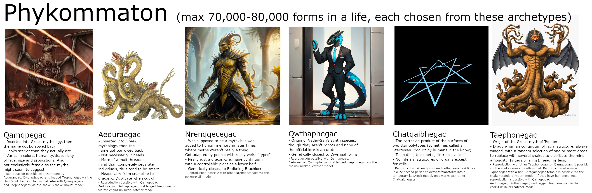
Phykommatons are a species similar and related to
Omnigeons, but with a different set of forms. They are
genetically predisposed to be more outgoing and kind than
Omnigeons, but this isn't a constant (there are very
mean-spirited Phykommatons and very friendly Omnigeons). They
inhabit geometries in The Stack that are the self-products of
hyperbolic spaces, such as H2xH2, H3xH3, H4xH4, etc. There is
also a more primitive and less intelligent variety existing in
the 3D geometry of H2xE1.
Phykommatons, like Omnigeons, look completely different to one
another. This is due to them possessing immense sensitivity to
radiation. Upon being even slightly irradiated, their body will
be completely and irreversibly reconfigured. Phykommatons are
quite a lot more sensitive than Omnigeons, but compensate by
having around 70000-80000 reconfigurations per cycle instead of
5000-5500. A specific, temporary configuration is called a
"form". Forms can in theory be anything, but like Omnigeons,
they almost always fall into a few archetypes, but they aren't
named in human languages, so this article will give their names
in an evolved form of the Quatrammotile language.
Phykommatons are hermaphrodites through reconfiguration, with a set gender per form. Their reproduction is exclusively sexual, and follows a complex multifaceted model. On Campe-type, Hydra-type, and Synth-type, the chain>unlinker+catcher model is between the front legs; Alraune-types use the pollen>pistil model; and Startesian products violently ram each other exactly 4 times in a 22-second period to activate/transform into a temporary key>lock model. Thus copulation requires coordination of forms.
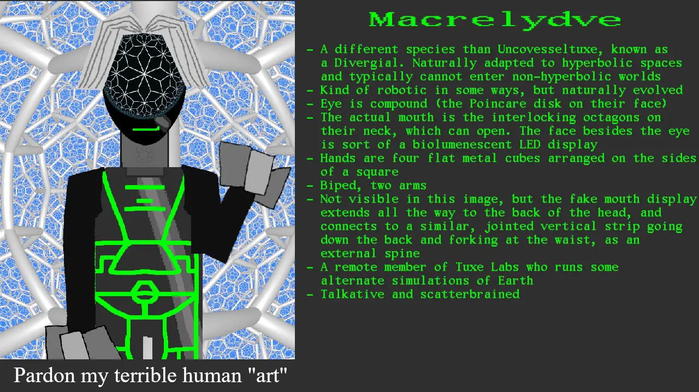
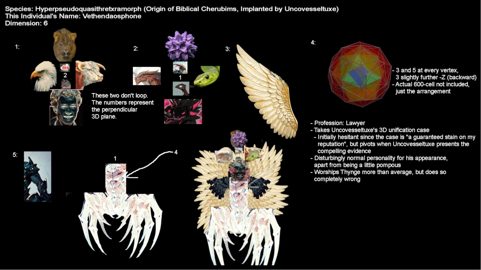
These are a species named after the 3D Pseudoquasithretxramorphs due to their similarity in higher dimensions, which in turn evolved to imitate Quasithretxramorphs, which evolved to imitate hretxramorphs. All four resemble biblical cherubims.The draconic humanoid continuum is an attribute of many types of forms such as Brachiocri in Omnigeons and Campe-type and Typhon-type Phykommatons. It is characterized by a variation in facial structure from "humanoid" (often following a more anime look) to "draconic" (elongated face, tough scales, jagged mouth boundary, slit pupiled eyes, slit nostrils). It is called a continuum because features of the two can mix together in many ways.
The Stellatriton form type is shared between Omnigeons and Phykommatons.
It is relatively rare, but not as rare as Arraphims.
(It was added really late in lore development and was previously considered
part of Brachiocri just for Thaneophyros, but I liked the idea of generalizing it.)
There are two types. Flat Stellatritons have a front and a back, and their
tail arrangements lie within the plane perpendicular to the front-back and up-down axes.
They may either walk directly forward and backward, or sideways within their tail arrangement plane.
Radial Stellatritons take up the front-back plane with their tail arrangement as well, severely
limiting their movement while making it mostly direction-independent.
Stellatritons have a central star (non-convex or compound polytope) made out
of metallic tissue, that divides its interior into regions of various density.
The area (or "cell") with the most density houses one torso facing outward on each of that area's
facets. The torso typically has its arm/pec/ab arrangements based on the facets.
In between the torsos is a large connecting dome of skin and flesh that houses the organs, and all torsos
appear merged into its side.
Cells with lower density house 'tiers' of tails or wings.
The tails visually resemble that of a mermaid, and have colorful skin covered in scales.
They are prehensile and very weak to gravity, but they have powerful pushing force and impressive bending strength.
Despite their fishy appearance, they are able to walk on land with great effort, as well as propelling through liquid.
Different tiers may have different colors or patterns, attached wings, or may be encircled by Toriphan rings.
A tier may also consist of only a wing in each cell, which splays across the ground.
The tail coming out of a cell comes directly out of the bottom side of the star perfectly fitted in cross-section to the cell,
but quickly deforms along its lengths into a rounder, more spherical cross-section. A wing coming out of a cell, however,
will just exit the bottom side of the star without trying to fit the cell snugly, though it must start smaller than the cell
and may grow in cross-section width to its full size along its length.
For Stellatriton forms with large numbers of separate tiers, the many tails may start to crowd each other.
Thaneophyros Form 3 in the novel is a good example of a Stellatriton.
Since every world in the Stack has its own timezone, and every
time manifold has its own
entire concept of time, times will be measured relative to
Uncovesseltuxe, in
~SL(2,R) x E ;; E1 ;; E0 years (at the current rate, one of
these years is about 356
human days and 4 human hours, with each year being 140
of his days and each of his days
being 61 of his hours).
The E1-timespaced portions of the Stack are
only 3,500,000 years old in the canonical
present that the novel takes place. However,
there is a canonical future after the novel
which takes place later than that. Up until
950,000 years ago, the stack was mostly
Thyngeoids, plants, and immortal creatures
created by evolution. However, 950,000
years ago, the concept of "death" was deliberately
created and bioengineered into some
organisms to give people a lot of time to exercise
math agent control without worrying
about normal life affairs. It could occur in many
different ways, but no matter how it
occurred, one would be reborn after a
deliberate length of 1.2 million years of meta-time
in the relative frame of reference to their
time experience in life. This rebirth
timeout was not ever written down and was
quickly forgotten by newer generations. At the
time of the novel, the concept of death simply
isn't old enough for a rebirth to have
occurred.
430,000 years ago, an Omnigeon named Vwaiss
branched off of another named Oessent. Vwaiss
lived a relatively normal, boring life as an
accountant, though they had a peculiar habit
of always wearing a tuxedo at every occasion,
having racks and racks of them in all
colors and sizes to fit any new reconfiguration.
His life lasted around 30,000 years
(around the equivalent of a human living to
their fifties) and
encompassed 930 different forms, having a strong
tendency for Brachiocri with serpent
tails and human-like facial structures.
Around 400,000 years ago, Vwaiss began
researching the third dimension and its
inhabitants, seeing them as equally
intelligent to those of the fourth dimension.
A now defunct group called Thrantics whose
main purpose was spreading anti-3D rhetoric
discovered these endeavors and hunted Vwaiss,
who hid out in ~SL(2,R) x E (a relatively
distant and old-fashioned world) and got the
"toggle procedure" which converts aquatic
and terrestrial Omnigeons to the other type
(in this case they changed from terrestrial
to aquatic). They lived there for another 200
years or so before they heard news that
Thrantics had entered ~SL(2,R) x E, and they
knew that 1. Thrantics was here specifically
for them and 2. There wasn't enough time to get
toggled again and leave.
Vwaiss had about five hours to preserve his
work on 3D beings plus everything else he'd
done, and for Omnigeons there's an incredibly
quick way to duplicate your entire stash of
memories: mitosis. So he did one mitosis
immediately, recovered,
then did another two hours later, both times
telling his branches to leave immediately
and not tell anyone their origins. The first
of these was named Neweśytrazâkâi
[nɛð̞ɛθɪtɹʷ
æzakai], while the second was
named Teg̊evâńtrazâkâi
[tɛgʷɛvaŋtɹʷæzakai].
Teg̊evâńtrazâkâi
stayed in ~SL(2,R) x E their
entire life, moving to another country and
working as a medic. Their branch's branch,
Mysdeteweźokuń [mɪsdɛtɛð
̞ɛðokʊŋ], lived a much
longer than average life which carried on
after Neweśytrazâkâi's
record-long life ended,
eventually figuring out a ritual to "kill"
math agents, thus resurrecting them, and did
so to Vwaiss, giving him a second life that
lasted slightly longer than even
Neweśytrazâkâi's.
Neweśytrazâkâi stayed in
~SL(2,R) x E for about 500 years/12
forms before he got the
toggle procedure to become terrestrial, traveled to E4,
and became a TSA agent (which in the Stack is more to protect
against the disorienting
effects of portal travel than to protect
against security risks). Around this time they
started going by the name Ov'nquvetheq'lt'quq
[ɒv͡nqʊvɛθɛq͡
lt͡qʊq], a Quatrammotile E4
name rather than a Tawetrays ~SL(2,R) x E name.
After just a short four years working as a TSA agent, another
Omnigeon from S3 x E
traveling to E4 named Outzschcrad [aut͡ʃcɹʷæd] intrigued
Ov'nquvetheq'lt'quq with a
conversation during the safety checks. They exchanged email
addresses and chatted
immediately when they both had some time later that day.
Outzschcrad proposed starting a
traveldrone company together which would invent a more modular
solution,
allowing the head to swap out body parts while also being
able to exist on its
own.
The company, named Crad Labs,
started out with little funding, but
eventually they were able to pitch
to investors and start actually building
stuff. Around this time a memory query
by Ov'nquvetheq'lt'quq yielded back Vwaiss'
work about 3D beings, and the former
decided they wanted to continue this
research. (Thrantics had since splintered off
into a bunch of different organizations
whose goals eventually changed to vastly
different endeavors ranging from 4D polytope
education to portal safety campaigns
and using quasi-astral projection as an
alternative to physical travel methods.)
Outzschcrad decided to help out, ultimately
coming up with the idea of
simulating a 3D species until they solved
a very complex math problem without outside
support, which was quickly decided to be
the Collatz conjecture. Outzschcrad was
also responsible for most of the design of
the humans, most notably the experimental
idea of facial expressions, which mostly
weren't a thing in the Stack at the time
as 1. emotions were expressed explicitly
and verbally in most cases and 2.
the faces of most Thyngeoid-derived species
were stiff and incapable of complex
movements of the eyes and eyebrows.
The simulation started at the point in
Earth's history that homo sapiens evolved,
about 300,000 human years ago, all remnants
of the past created randomly according to a
book of science fiction that Outzschcrad and
Ov'nquvetheq'lt'quq were both fans of.
During humanity's history, they repeatedly
developed the idea of deities, which
worried the two creators as such ideologies
had made Stack society collapse several
times in the past, but they figured it would
pass. It, unfortunately, did not, and
this would later lead to some difficult
compromises having to be made between humans and
the later forms of Crad Labs when allowing
humans to enter the larger Stack.
Around 2000 BCE human time, Thrantics
resurged as Neo-Thranticism, which put
Ov'nquvetheq'lt'quq in danger as they had
let it slip that they were a branch of
Vwaiss (however, the simulation was not
known publicly, so Outzschcrad was safe).
Ov'nquvetheq'lt'quq adopted the pseudonym
Uncovesseltuxe [ʌnkəvɛsəltʊks/
ʌnkəvɛsəltʌks]
and began an approximately 1500-year period of
life on the run, with Outzschcrad solely
in charge of humanity, causing Uncovesseltuxe
to miss the majority of ancient Egypt.
They quickly found a travel partner named
Rythovelnis [ɹʷɪθovɛlnɪs]
who helped them
forge IDs and such, but this person wasn't
very important beyond that and they
were mainly friends out of necessity.
Eventually Neo-Thranticism became a parody of itself to such
a large degree that
no one in it actually believed in anti-3D ideologies, causing
the movement to
eat itself and disappear for the most part. This allowed
Uncovesseltuxe to return,
but they had gotten so used to using that
as a name that they decided to keep it.
Around this time they began to identify
under the human gender system as male
rather than their natural gender of not
having one at all. To this day, Uncovesseltuxe
is one of the very few Omnigeons to use
an English pronoun, that being he/him.
Almost every other Quatrammotile speaker
uses the pronoun qeq.
At around 0 AD, Thaneophyros
[θeinioufaiɹʷʊs]
joined Crad Labs and suggested to broadcast
humanity live to gain extra donations.
The new trio decided together to
start this, and quickly
coded an explorer app that allowed
navigation across the Earth's surface and into
buildings and vehicles while seeing
everything happening inside and listening to
automatically subtitled conversations.
This led human writing systems to start
being seen in Symbolacra, as well as some
human culture being appropriated into
Stack culture. Even stiff, inaccurate
approximations of facial expressions became
popular enough to actually start being
recognized culturally, and plastic surgery
procedures were invented to add the
necessary muscles to more accurately represent
them.
In 1468 AD, Outzschcrad spontaneously reconfigured
into a locked Symbolacron form while
visiting on Earth, causing news to spread around
the Mediterranean that a demon had
actually been spotted in Italy.
Attempts to rectify the situation only made it
worse, eventually causing humanity
to effectively set itself back to the stone
age by pure war. Uncovesseltuxe thankfully
had a backup from a week before the incident,
but Outzschcrad was so simultaneously
traumatized and hateful towards his own form
that he decided to resign.
The company, now composed of Uncovesseltuxe
and Thaneophyros, was renamed Tuxe Labs,
and the simulation continued from the backup.
(It is presumable that most of the lost copies
of the humans now exist as math agents,
and will eventually emerge as Boltzmann brains.
They are probably very confused.
One such entity seems to exist already, though
their memories are a bit confused and
vaguely intermingled with the plot of the
human anime "To The Abandoned Sacred Beasts";
this entity is known as Banqrrougt and they
acted as a living higher-dimensional
crowbar for Tuxe Labs' second attempt at
3D integration.)
At some point in the late 21st century,
an AI experiment managed to hack itself
out of the simulation, and Uncovessletuxe,
against his better judgement, allowed it
to join Tuxe Labs as an assistant. At this
point begins the novel, which you should
read before proceeding.
...
Uncovesseltuxe, living nearly 400,000 years, set
a record for longest-living mortal
organism before dying, also being the first to
die of running out of reconfigurations.
He became a very important math agent
with the ability
to control the symmetries of the
cantellated 600-cell, reshaping the timeline
to make the symmetry changes be perceived as
a force around high intelligence,
faking the evidence in his second attempt at
3D integration and changing the result.
He did an astronomical amount of experimentation,
testing tens of thousands of timelines
from many different starting points, all of
which would instantly
add to his existing memories by fork/merge
mechanics the moment they were created
allowing him to very quickly check if a
strategy worked and what went wrong. Some
of these timelines are quite weird, going
as far back as entirely different versions
of Vwaiss leading to completely different
versions of Uncovesseltuxe or his other names.
One notable alternate was that of
Xavier Uncovesseltuxe, which like his second life
was an internet service provider employee,
except that he managed to run a somewhat
similar simulation, gain contact with a
version of the author of this lore (hehehe) and
infiltrate one particular Discord server
about a 4D game, spreading unintentional
misinformation and eventually falsely
admitting to being the same person as the author.
He did make some decent music as well,
something that our Uncovesseltuxe has not done
(however, Uncovesseltuxe 2-7 time traveled
back to recompose them from memory
and graciously provide them to us in our present:
Consequences
[https://www.youtube.com/watch?v=-ZRSv9MdgIs] and
Zant/Compilation
[https://www.youtube.com/watch?v=8PCWMM8mSv8].
He also authored a video with the help of the author,
Esoteric Topics in Geometry
[https://www.youtube.com/watch?v=ajWZ9i8DpgY].)
He reportedly had a much lower voice, and
when speaking English he had a variant Southern
drawl that he could never quite get control
of, as opposed to our Uncovesseltuxe who has
an indeterminate emulation of a British
accent.
Anyway, Uncovesseltuxe met Vwaiss in a
place known by the reborn as the Aether
Watchtower (an imagined "physical" location
where all math agents exist in ghostlike
forms and can communicate via streams of
pure information unimpeded by language).
The two became familiar with each other
and Vwaiss was happy to see his work continued
and so incredibly close to its ultimate
goal. Vwaiss' control was the surface area
formula for some weird toric pyramid thing,
which wasn't very useful on a local scale,
but they were able to help butterfly effect
a few changes through history by causing
various damages and topplings of skyscrapers
of that shape. It has even become evident
that humanity would have never existed
without some of these megastructures' failure,
and that humanity's existence was actually
not the "initial" chain of events but merely
the Vwaiss-constructed future which ended
up sticking around in the final iteration
(some rebirths of sapient Turing-machine
things exist which also claim to have been
invented by Uncovesseltuxe, and the
latter confirms it)
Eventually Mysdeteweźokuń interrupted
Vwaiss' math agent life by performing the
ritual, causing them to live a new record
long life, their second. Vwaiss died again
mere minutes before Uncovesseltuxe's second
life began. Uncovesseltuxe began to feel
the pull of his aquatic body forming in
~SL(2,R) x E. Not wanting to leave Vwaiss
alone, he frantically thought that maybe
establishing some sort of heavy mental
connection between them could drag Vwaiss
out immediately into their third life.
This turned out to actually be true; as
Uncovesseltuxe and Vwaiss spammed each
other with long jumbled email-like messages,
Vwaiss was pulled into a volume of air
inside their house.
Vwaiss later said the following on a
trinsferred human's talk show: "Returning that way
was pure torture and pain. I lived for
several minutes slowly gaining consciousness as a
growing brain and several more fully
conscious without my skin. But now I'm here for the
foreseeable future, and I think it was
probably worth it." Uncovesseltuxe did not see any
of this as he spawned outside of Vwaiss'
house while Vwaiss spawned inside their living
room. Vwaiss kept this from Uncovesseltuxe
for decades, not wanting to make him feel
guilty. Both of them immediately got
toggled after that and returned to E4.
Vwaiss, Uncovesseltuxe, and Ievokt were
the only currently living members of the expanded
Tuxe Labs team; Outzschcrad, Thaneophyros,
Taylor, and Banqrrougt were all dead, and
the three of them aimed to recover them by
performing Mysdeteweźokuń's ritual.
However, doing this required finding
their math agent controls, which can only be
done by detecting and identifying their
communications, no easy task when you don't know
what they are.
Thaneophyros was the first, he controlled
a specific aspect of aerodynamics in
Solv-like spaces which allowed him to
effectively toast short written messages
onto wings. This made him feel terrible
as doing this is kind of cruel, but eventually
he managed to get onto the news to send
a concise message to reach Vwaiss, who
liked to stay up to date:
TUXE:MAKE WINGS
WE FIND MY =
Vwaiss, who saw this on TV, relayed
the message to the other two, who
started buying cosmetic wings in bulk,
transported their stash to Sol^4_1 and
did A LOT of test flights. Only those
done in snowy thunderstorms would properly return
communication, so it took quite a while.
Eventually the four of them were able to figure
out the exact physics property being violated
(it wasn't obvious to Thaneophyros what
exactly he was controlling), then construct
the required materials for the ritual and
resurrect Thaneophyros only 10 years into
Uncovesseltuxe's second life.
Taylor was, what do you know, a Taylor
series! Thaneophyros immediately upon respawning
was able to begin the four-hour process
of transcribing the formula, which involved
a crazy amount of hyperbolic trigonometry,
factorial Gamma functions, and weird
smooth interpolations of the function for
the nth quadruplet prime. This was the easy
part, but it took 40 years to construct
something representative for the ritual, which
required solving many unsolved problems
in number theory just to do that stupid
quadruplet prime function and commonly
required entering absurdly large manifold
presents, forking, and working on the
problem in large parallel clusters before merging
all findings together into one mind.
Ultimately a large data center was rented in a world
with circular present and the ritual
was performed by a large fork-cluster of Ievokt
surrounding the entire data center.
Ievokt apparently reabsorbed them as extended
multithreading capabilities in his CPU,
the forks never truly disappearing due to his
different mind-wiring.
Banqrrougt controlled a math formula so
incredibly specific that it controlled exactly
the contents of, again, the human anime
"To The Abandoned Sacred Beasts", allowing her
to speak in full videos. She said she
would rather live out her full math agent
existence, so they bought a nice TV and
had it play what would be the anime (if it wasn't
altered) constantly. Some very excellent
5D and 7D visualizations are available to 4D
beings online that are actually just
recordings of that TV's 3D screen playing the anime
on repeat.
Outzschcrad was the last, resurrected
1300 years in. Their control was the
order of the chiral square symmetry
group, which made the process of resurrecting him
require a lot of uncomfortable shapes,
but was arguably the most versatile ability of the
whole group because of its important
effects on structural stability. Honestly the
struggle of performing the ritual
consisted 99% of trying to construct a chiral square
shape that didn't look vaguely
anti-Semitic. The entire process
took seven hours and
videotapes are available on
Ievokt's archive website.
At this point, the secret to living a
full 5000-odd forms was now known and public (you
essentially let a few forms in a row
nearly die of old age before reconfiguring, which
reshapes your telomeres to fully reset
their length during reconfiguration rather than
stopping just shy), and it was now
common procedure, allowing people to
live anywhere
from 250,000-600,000 years before
becoming a math agent, and math-agentism was now a
celebrated part of the life cycle,
making rituals' main purpose not to resurrect for the
sake of resurrection but to sync
friends' physical lives together.
The world at this point is still
very far from being a utopia,
but in general the fear of death
that both stifled and advanced progress
was gone, which made the Stack a
place where bored immortals could occupy themselves with
random and inventive shit for all
of eternity. Technology also now allowed
memories to be altered or removed,
which dispelled the fear of running out of things to
do.
The Stack 2.4 million years from now
is an imperfect heaven, and someday you and I will
get there. But for now, one problem is glaring us in the face:
How do we, as a species, stop fighting, get our shit together, and solve the fucking conjecture? - Kronosta, 11:18 PM CST, 12/10/2025
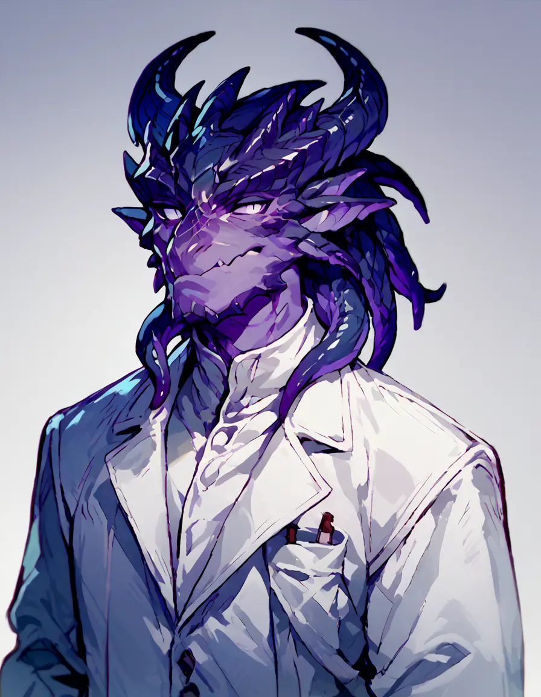
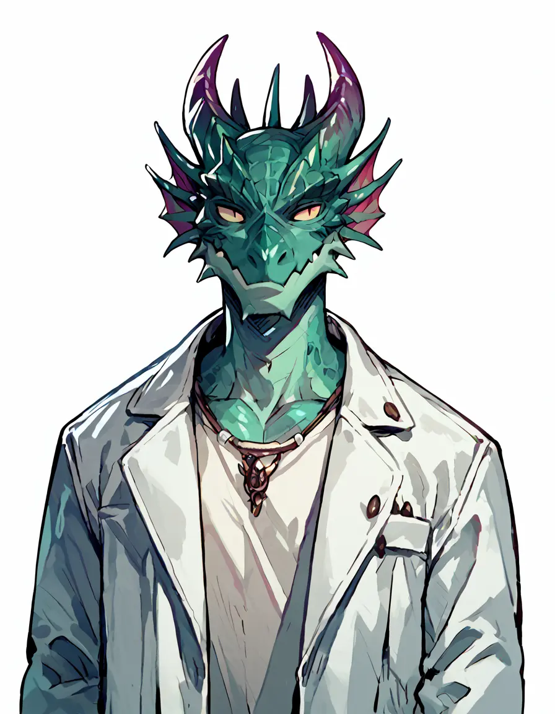
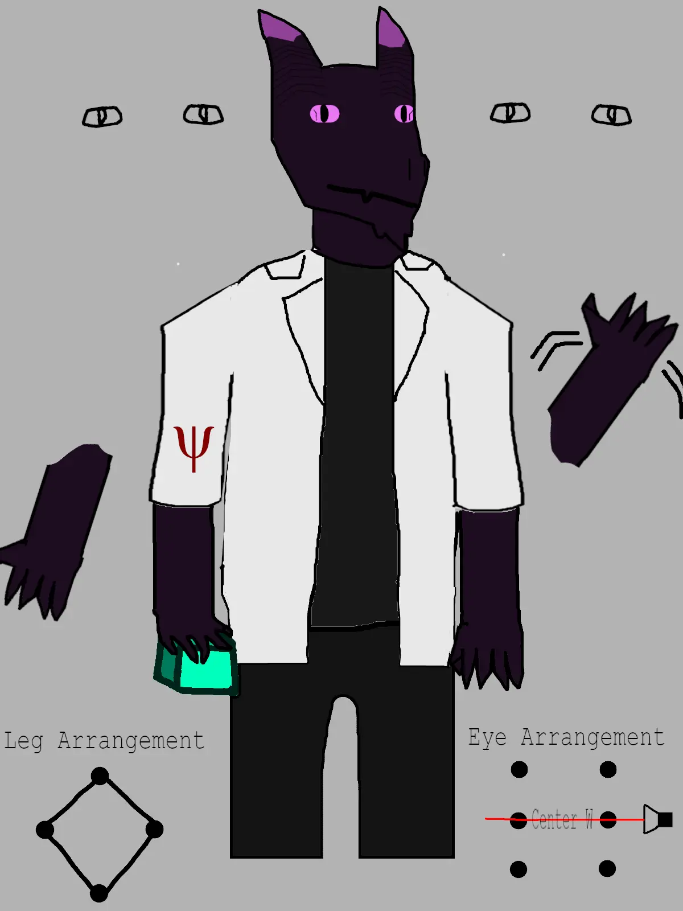
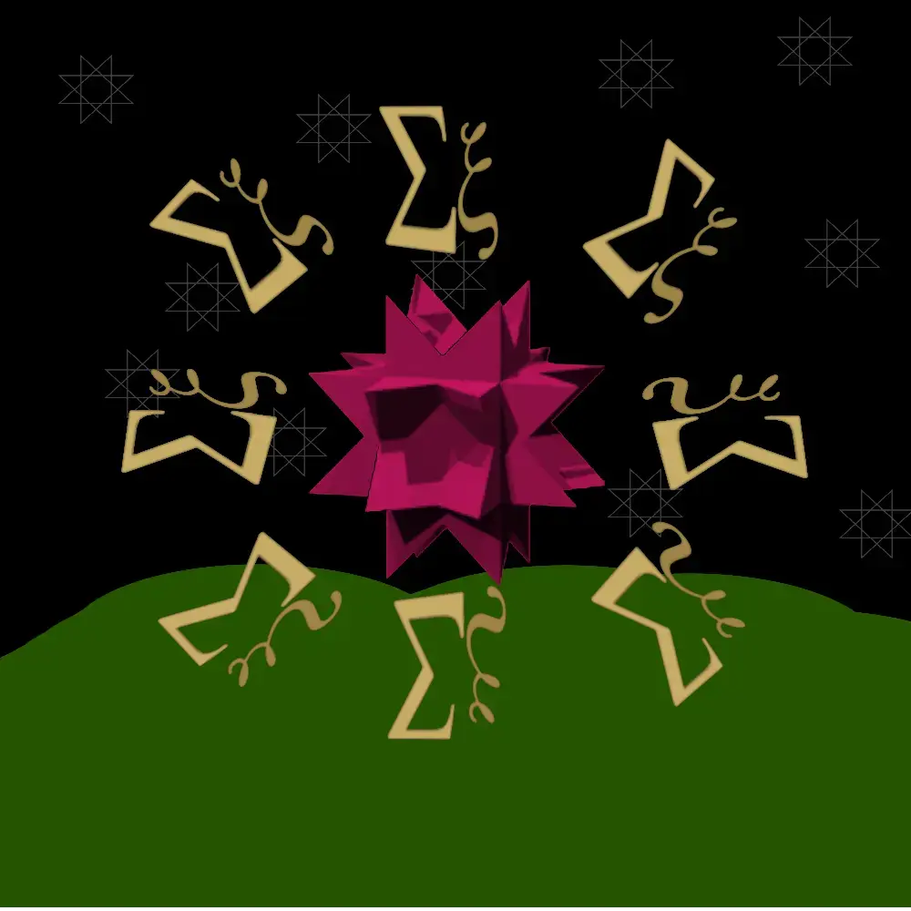
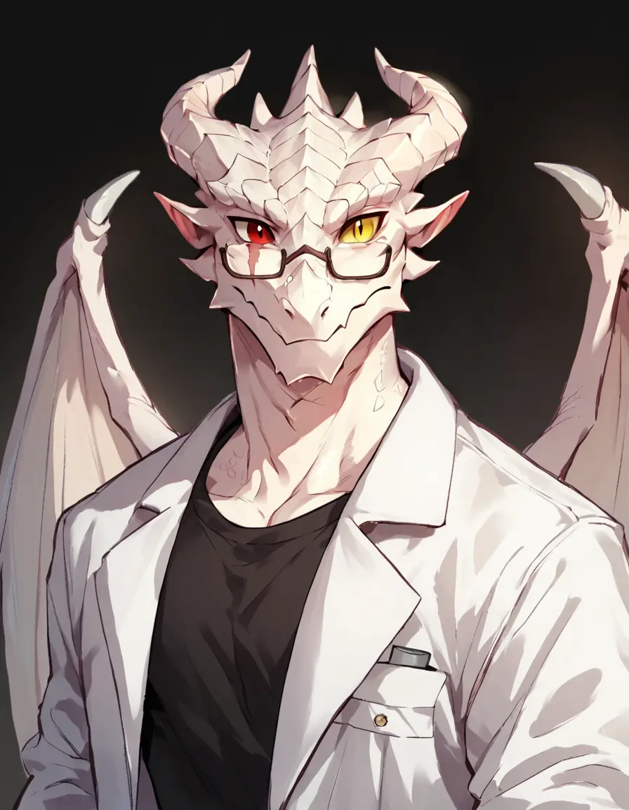
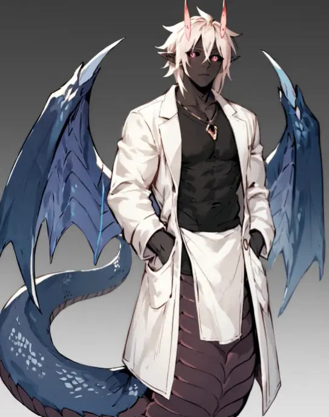
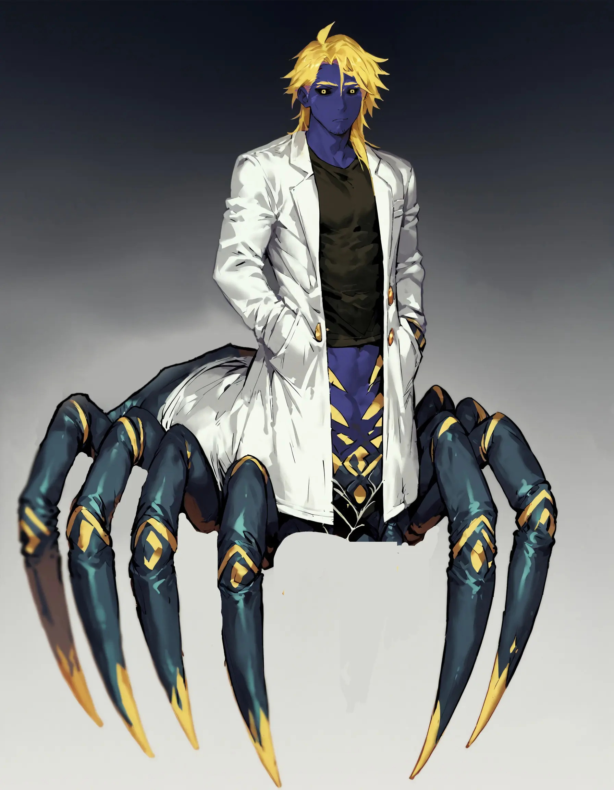
Tha..nks...to_..hum .|..../.....\....|. .|.../.......\...|. .|../.........\..|. .|./...........\.|. ani.............ty_ .................. for.............mak .|.\.........../.|. .|..\........./..|. .|...\......./...|. .|....\...../....|. ing..my_...lif..XXX e_c..com...ple..te_ .|..../.....\....|. .|.../.......\...|. .|../.........\..|. .|./...........\.|. Tri.............nsf .................. ur_.............any .|.\.........../.|. .|..\........./..|. .|...\......./...|. .|....\...../....|. tim..e_u...lik..e._
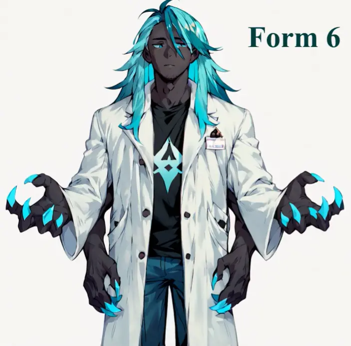
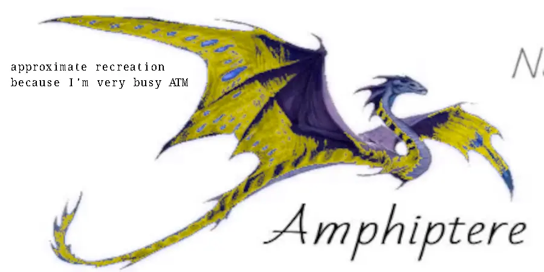
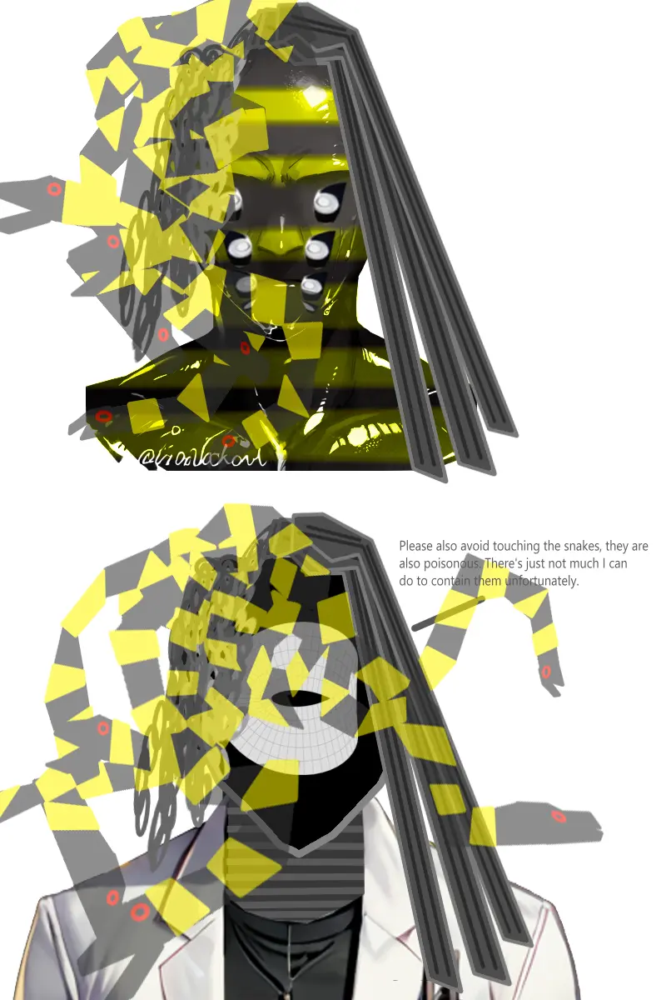
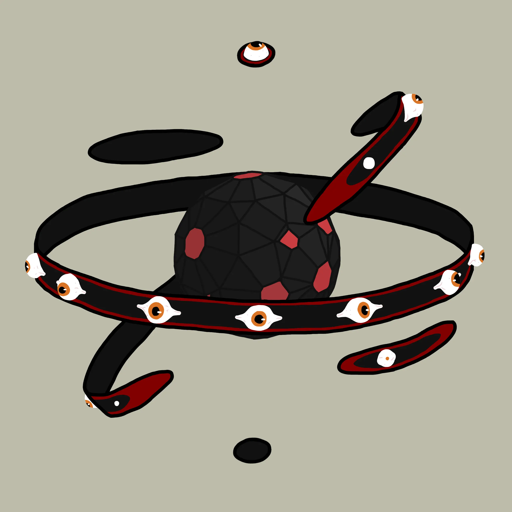
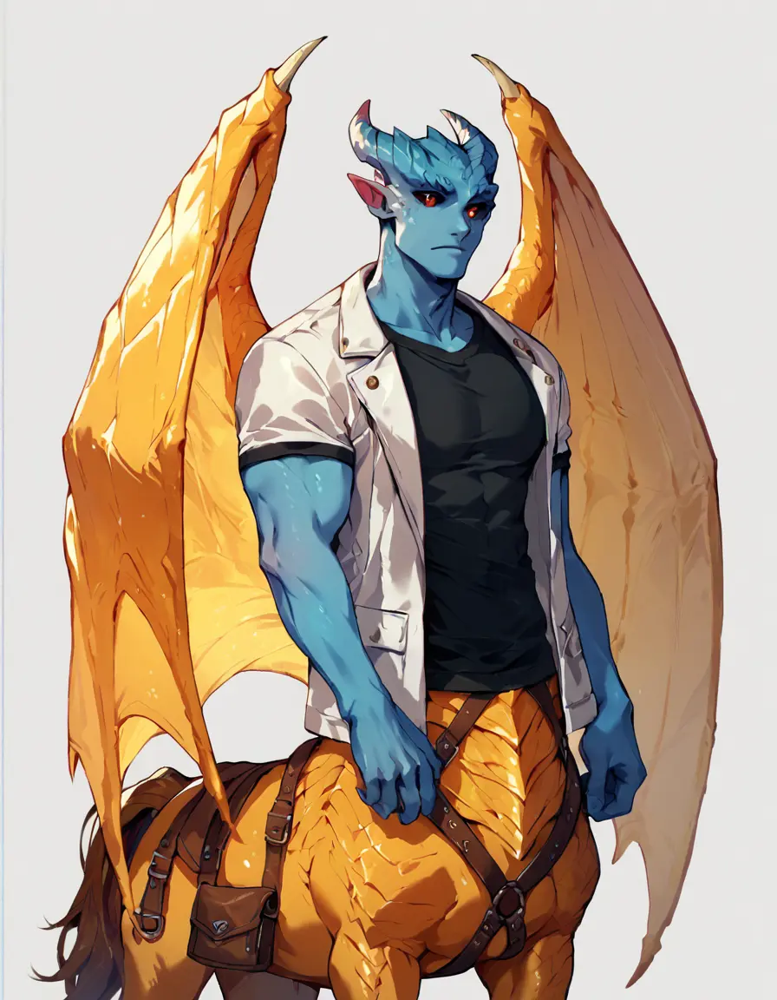
ɮ-----ɕ |\.../| |.ʨ-ʡ.| |.|.|.| |.ʨ-ʡ.| |/...\| ɮ-----ɕ
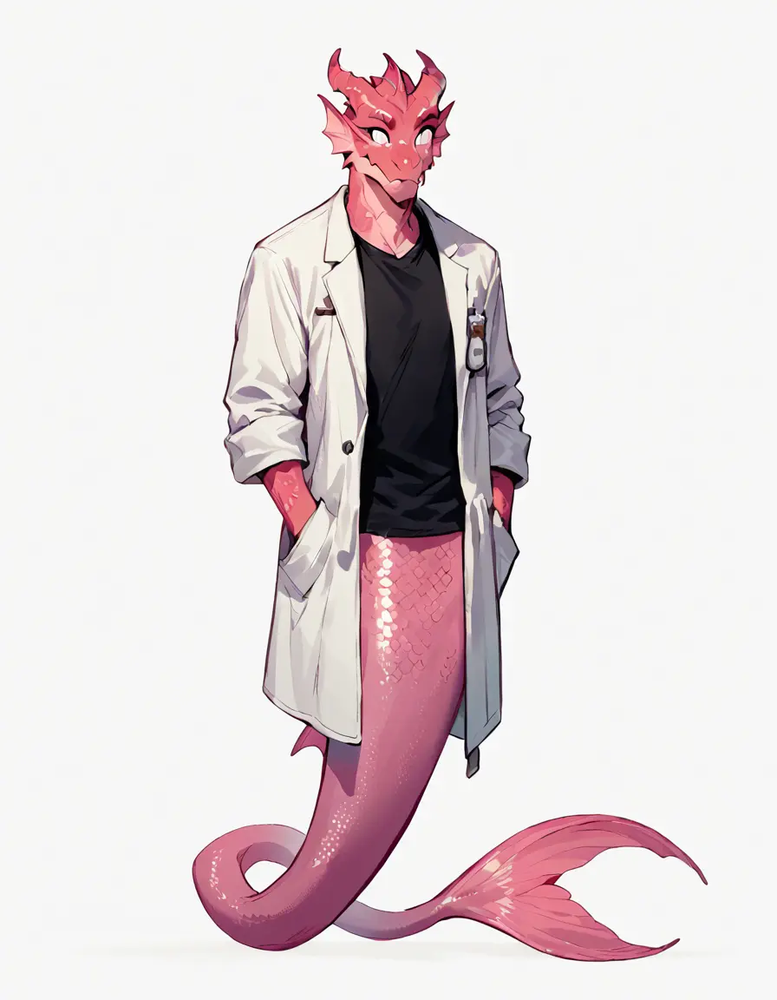
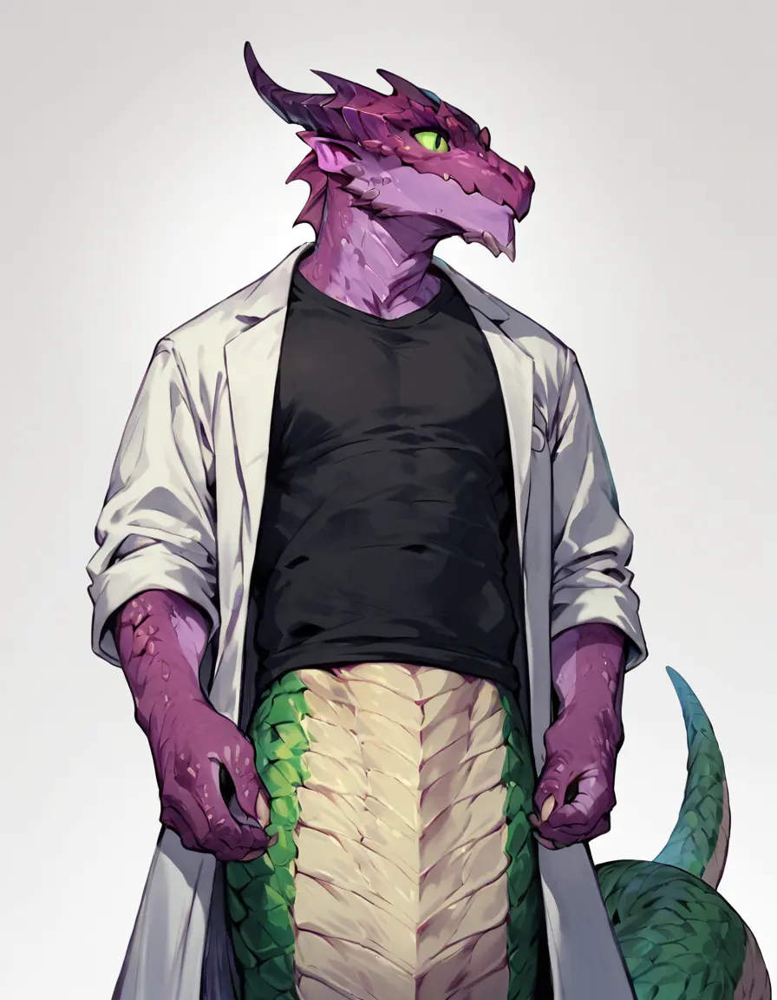